BOULDERDASH! Jamagic Tutorial (r3)
Contents
2.00
About this tutorial
2.01 What
is Boulderdash?
2.02
First things first
2.03 Main
Loop
2.04
Setting up the Project
2.05
Making some simple Level code
2.06
Graphical output
2.07 Some
code towards making an editor
2.08
Making an editor
2.09
Saving and loading
2.10 The
tests
2.11
Rearranging code
2.12
Defining the new constructors
2.13
Loading the level properly
2.14
Coding the player
2.15 A
special function
2.16
Making movement
2.17
Improving the scrolling
2.18
Rocks and diamonds!
2.19
Making some mineral physics
2.20
Making more mineral physics
2.21
Pushing boulders
2.22
Exiting the level
2.23 A
new level
2.24 The
baddies and the bugs
2.25
Firefly AI
2.26
Amoeba AI
2.27 Rat
AI
2.28
Adding death to the game
2.29
Implementing player death
2.30
Making transitions
2.31
Adding in an ending screen
2.32
Adding in sound effects
2.33
Adding in a Heads Up Display and the time limit
2.34
Making support for user levels
2.35 A
retrospective view
About this tutorial
Unlike the previous Clickteam game creators, Jamagic uses scripting instead of
the 'Click Interface' used in previous titles Klik and Play, Click and Create,
Games Factory and Multimedia Fusion. This tutorial is here to help people who
are completely new to programming and have no idea how to script, or even what
a script is, but may have a slightly familiarity with the Click Interface of
game creation.
At times
this tutorial may seem needless longwinded, but keep in mind I'm trying to make
suitable for anyone that wants to use Jamagic. Everyone can learn to
program if they put their mind to it. It varies from person to person how easy
it is. As a note, you will be at an advantage if you are good at: Mathematics,
abstract thought or logic, puzzle solving, playing a musical instrument
(similar part of brain), or drinking caffinated drinks.
The
author: My alias is 'Dr Ian'. I'll let you guess my real name. I can be found
lurking on the Clickteam forums and just generally about the internet (after I
found the secret Goldeneye button codes my name has been over a lot of web
pages... google for it!). I live in Scotland, where it is cold. People don't
seem to notice that Edinburgh (my city) is (a) On the same northern degree as
Moscow, and (b) Further north than all of america. It's cold!
Have
fun...
What is Boulderdash?
Boulderdash
is an old game that consists of collecting diamonds whilst avoiding falling
rocks and nasty enemies. Here is a screenshot:

It has a
large number of names and variations in gameplay, such as: Skull Duggery, Rocks
'n' Diamonds, Dig Dug, Douglas Rockmore... the list goes on and on.
The game
is played in an arena of about 30-100ish squares width and height although it
varies depending on the game variation. There are several things that can exist
in each level, these are:
The
player who digs around, and is not subject to gravity.
Air,
which rocks and diamonds fall through.
Earth to
dig through which becomes air.
Rocks
which fall through air if they are piled too high or if pushed.
Diamonds
which also fall through air but can be collected if sitting still.
Metamorphosis
tiles which change rocks to diamonds and vice versa.
Titanium
bricks which can't be moved through or moved about.
TNT
blocks which detonate when hit by a falling rock.
Fireflies
who travel through tunnels hugging the right hand wall.
Amoeba
who swell up filling the level and eventually collapse in a massive well of
diamonds or boulders.
Rats
which run around to attack the player and explode in to diamonds.
Exit
blocks which open when enough diamonds have been collected.
Each
level is played on a time limit, and a diamond target. When one of the enemies
is hit by a falling rock or diamond, it detonates, destroying anything in the
adjacent squares. The edge of the level is made up of either metal blocks or
exit blocks. Sometimes there are not enough diamonds on the level to open the
exit and more must be made by either collapsing an amoeba or pushing rocks
through a metamorphosis block, or killing enough rats (which explode in to
diamonds).
For the
sake of example, let's make the play area 100 squares by 75 squares.
First things first
The first
thing to do is to plan the game out. How will the object 'hierarchy' work?
Well, using plain English this can be discovered.
“The game
will be based upon the current level, which will be made up of the blocks in
the level. Also in the game are the rocks and diamonds, and the time- and
diamond-limit and the player and the baddies. The player will have lives left,
along with the number of diamonds collected. Each of the baddies will have a
current idea of what they are doing (following the walls, moving toward a
specific point, expanding if it's an amoeba, etc.). The rocks and diamonds will
only know whether they are falling or not.”
The
previous paragraph may seem like a logical description of how the game would
work but it actually details the layout of the objects. Take a look:
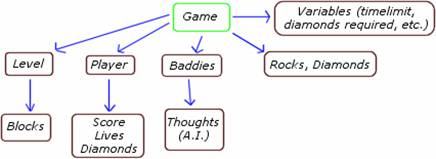
This is a
logical breakdown of the paragraph in to a hierarchy of objects. Obviously, the
'Game' isn't an object because then everything would be in it. Instead, the
'Game' is the top level, the actual source code. This means that the time limit
and diamond target should be global variables, and the four main object types
are the Level, the Player, the Baddies and the Rocks/Diamonds.
There
will only ever be one Level and one Player at a time, so only one of each is
needed. However there will likely be more than one baddie at once and more than
one rock/diamond, so these should really be arrays of objects. The first baddie
will be the first entry in the baddie array, the second will be the second
entry, etc. Even if there is only one, it can be contained in an array with
only one element. In a similar way, there will be many blocks on the level
(100*75 = 7500 on each level) so an array is really needed to store all the
blocks. Here is an updated picture with all the arrays of objects drawn in red.
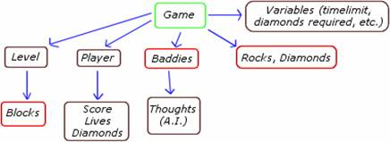
Now the object
layout is starting to take shape. This is a clear indication of how the game
should be structured, and it was derived from a factual description of how the
game works. Now on to the working of the main game.
Main Loop
Now the
main loop. What must the game do to run each frame? As a list:
• It has
to move the player about.
• It has
to move the baddies about according to their AI which must be updated also.
• It must
make the rocks and diamonds move.
• It must
update the blocks in the level if necessary.
• It must
change the time and the other variables.
A good
idea when creating a game is to order these in favor of the player. That way,
when something very close
happens, like they hit the exit just as the time runs out or they just
dodge out of the way of a falling rock, the game will let them do it. If it's
not done like that, the game will seem unfair occasionally because the player
will think that they have made it, but the order in which events occur causes
them to fail. So to order them with preference to the player.
1. Move
player and update info, so that you can get out of the way of anything falling
on you.
2. Make
the rocks and diamonds move incase they fall on a nearby baddie saving the
player.
3. Move
the baddies.
4. Update
the blocks. This is after updating the baddies so that they can't follow the
player on to dirt if the player digs out the way just in time.
5. Change
the time so that as much as possible can occur right up until time runs out.
This is
the basis of the main loop. If the program manages to do all these things every
frame, then the game will be running and playable. The order doesn't have to be
totally strict, it's a good guideline. For instance, some of those events may
be handled outside of the main loop, in which case they cannot be ordered with
the others.
Setting up the Project
The
project will have to be started now. More planning could be done, but instead
I'll get to the point a bit quicker and plan each step as I get there.
First
start up Jamagic and bring up the folder, and enter the information something
like this:
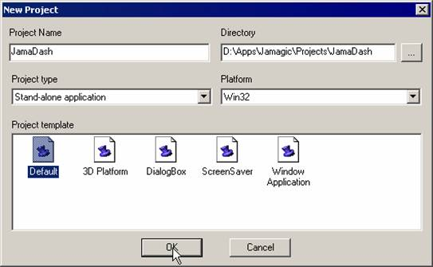
I've used
the name JamaDash because it's great. It'll ask you if you want to create the
directory, so answer yes of course. Then it'll bring up the empty project. As
personal preference, I recommend changing the name of the first source file to
'Main' because that's what it'll be, the main source file. The rest of this
tutorial will use a naming convention to clear up code. The source files have a
document symbol before their name, like this: ''.
A source code symbol like that will appear before each listing of source in the rest of the tutorial to
determine where each piece of code goes.
The main
loop at the moment contains nothing because there's no code yet, so all we can
do is put a while loop in the file. Like this:
While(TRUE)
{
}
Not much
to start with, but in time it'll be added to and will eventually turn out to be
the full main loop. The first thing to start programming is the level, because
this is the most important. Without a level, nothing can be seen so it'd be
pretty hard to program the other parts of the game yet. And of course... if you
do program the level code, it won't have any levels to run. The very first
thing to start on is some code to make levels then. However, this will probably
use the same code for the levels as in the final game, so it's rather efficient
to start here.
If the
level code is going to be made, a new file would be helpful to store the code
in to keep it separate. A good name for the file would be 'Level'. As another
point of personal preference, I like to make a file called 'Funcs' to store the
miscellaneous functions in. Set up the source code files so that they look like
this:
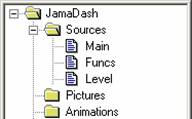
So on
with creating some level code.
Making some simple Level code
So what
does the initial code for a level look like? Just a constructor like this,
really:
Function JDLevel()
{
This.Block[0, 0] = 0; //
Initialize the block array
}
This is
called a 'constructor' because it can 'construct' a user defined object. It is
a function which is specifically designed for such a reason which is why it is
called a constructor. All the variables inside it starting with 'This.' are also called 'properties'.
The
constructor is simple enough, it just defines the first element of a two
dimensional array which will represent the play area. But it obviously needs a
lot more. For purposes of editing there has to be some kind of function which
clears the array and initializes it. If the blocks are to be stored as numbers,
then these need to be decided so that no confusion will result. A pretty
logical arrangement is as follows:
// 0 = Air
// 1 = Earth
// 2 = Titanium
// 3 = TNT
// 4 = Metamorphosis
// 5 = Exit
Using
these numbers as a guide we can make a function which clears the array and
initializes it properly. If you want to keep it as a reminder, put the above
comment in ,
along with the constructor for the JDLevel object. Now to write some code:
Function OBJ_JDLevel_MakeNew()
{
For(x = 0; x < 100;
x++)
For(y = 0; y <
75; y++)
{
If(x == 0 ||
x == 99 || y == 0 || y == 74) // Edge piece
Block[x,
y] = 2; // Titanium
Else
Block[x,
y] = 1; // Earth
}
}
This code
will clear the entire array but leave the edges as titanium. Now another
function is necessary which sets a block. Blocks can be set almost anywhere,
but the edge pieces must be entirely made of exit or titanium, so a function
which acts as a safeguard against misplaced tiles will be useful:
Function OBJ_JDLevel_Set(x, y, t) // Sets a block of type t to the
x and y coordinate.
{
If(x < 0 || x > 99
|| y < 0 || y > 74) // Off the edges
Return FALSE;
If((x == 0 || x == 99 ||
y == 0 || y == 74) && (t != 2 && t!= 5)) // an edge piece that
isn't solid
Return FALSE;
Block[x, y] = t;
}
This
function must be called to set tiles instead of setting them with the array
instead. This is important, because it means that the player or anything else
can never end up leaving the level if the sides are blocked. What else does the
level need to do at the moment? Nothing really. So time to 'wire in' the
functions that were just written. Add these two lines to the constructor:
This.MakeNew =
OBJ_JDLevel_MakeNew;
This.Set =
OBJ_JDLevel_Set;
These
will make the previous function properties of the JDLevel object. That will allow those
function to be accessed through the level object. Warning:
In the rest of this tutorial, source code is not always given to make new
functions in to properties of their objects. It's a very simple procedure and
it would take up quite a lot of space to explain it each time. Whenever a new
function is stated, it's up to you to make it a property of its
constructor.
Anyway,
after all that coding there's still no way of testing the JDLevel object, but after the next part
there will be because it's the graphical output part of the level code
Graphical output
Some resources
are necessary for the graphical output. 'Resources' is common Windows
terminology for the data that is stored within an EXE file. You may not have
realized yet, but Jamagic allows you to take direct control over the resources
very easily. They are simply held in the Project Window which is usually seen
at the left hand side of the screen. It may seem confusing that there is a
folder in there called 'Resources', but that folder is just referring to any
other kind of resource which doesn't fit in to the other categories. The
Jamagic help file details how to use this window.
The first
resource needed is a small picture that looks like this:
Let's
call that resource 'JDTile'. Now for the first of many picture details, which
give the relevant information about the previous image:
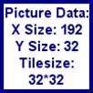
These
will accompany all the other images in this tutorial. The purpose of this is
because programs will often rely on an exact pixel spacing being used, so it
has to be clear how the picture is arranged. An art editor with a coordinate
readout is very helpful. Jamagic's built in image editor has coordinate
readouts, and all professional image editor programs should too.
The
resource itself was nothing outrageous, just the tiles in the same order as
were set out earlier with the numbers 0 = air, 1 = earth, etc. Once you have
drawn the graphics, put it in the project, so it looks like this:
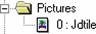
There are
a few ways of doing this. You can right click on the 'Pictures' folder and
select 'Import', or you can select 'Picture' from the 'Insert File into
Project' menu in the 'File' menu. Perhaps the easiest method is just to find
the file on your hard drive and drag and drop it on to the Project Window. You
rename resources by right clicking on them.
These
graphics will build up the level. When the game is started, they need to be
loaded in to memory. Let's make a property of the Level object that is a
surface with these tiles. Add this line of code to the JDLevel constructor:
This.BlockImg = New Surface("JDTile");
Now when
the level object is created, it will also load up the tiles so they can be used
to draw images on the screen. An actual function to draw the tiles on the
screen would also be useful. This is done by copying the images from BlockImg in to the current surface. A bit of
initial code to set up the window would help.
First go
to Project Settings, then the Runtime Init. tab and delete the code:
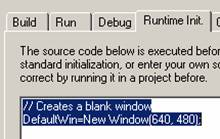
Now it
won't make the default window, but now there'll be no window at all, so we need
to add some code in to to set up the window. Here is a revised
version of :
gWindow = New Window(640, 480, 64, 64, 0, 32,
"JamaDASH!", Window.GAME);
gSurface = gWindow.GetSurface();
gSurface.SetAutoRefresh(OFF);
Level = New JDLevel();
Level.MakeNew();
While(TRUE)
{
gSurface.Refresh();
}
Now we
can access both gSurface
and Level.BlockImg, we can copy parts of BlockImg on to gSurface, depending on the values of Block[x, y]. Here is the code:
Function OBJ_JDLevel_DrawPos(xP, yP)
{
gSurface.Lock();
For(x = 0; x < 20;
x++)
For(y = 0; y <
15; y++)
gSurface.Copy(BlockImg,
x*32, y*32, 32*Block[xP+x, yP+y], 0, 32, 32);
gSurface.Unlock();
}
This
function takes a position on the level, and takes that to be the top left
corner of the screen and draws it. There will be exactly 20 by 15 tiles on
screen at once (640 / 32 = 20, and 480 / 32 = 15). Notice it uses the lock and
unlock functions of the surface to speed things up. Make this function a
property of JDLevel as
before and then make it draw from the tile (0, 0) before the refresh in the main function, like this:
Level.DrawPos(0, 0);
Once
that's done, run the program, and if you managed to do it all correctly, you
might see this the screen looking a bit like this:
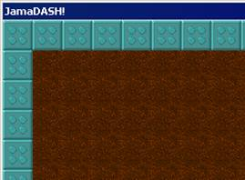
Except
the graphics will look like the ones you have drawn.
It took a
while but now this much has been done, it won't be too hard to continue and get
a lot more done. Making the program executable in any way is always the first
step. It's much harder to test the program if it can't be run to do any testing
on, so generally programmers will try to keep the program executable through
the whole development process. The first thing to do to test what has been done
is to change this code:
Else
Block[x,
y] = 1; // Earth
Changing
to
Else
Block[x,
y] = Random(2); // Air or earth
Then
it'll fill the level with air or earth randomly so testing is much easier.
After this it can be tested pretty well by substituting different values for
the DrawPos function call. If you try running
it when it is drawing the position (82, 0) it should crash out giving a non-initialized
variable error pointing at the array. The problem lies in it trying to draw
blocks which don't exist. For instance, in the DrawPos function, if x is 19 and xP is 82, the
drawn block will be 19 + 82 = 101 which is off the edge of the array! The
maximum position it can draw to is 80 (80 + 19 = 99, the maximum horizontal) by
60 (74 - 14 = 60 where 74 is the maximum vertical value and 14 is the lowest
down block on the screen). Some error trapping code needs to be placed in the
application to stop this happening. If statements could be used, but a much cleverer approach
would be to use the Max and Min functions. The xP variable must be a maximum of 80 but can be smaller, and a minimum
of 0 but can be larger. The code using Max and Min looks like this and goes at the start of OBJ_JDLevel_DrawPos:
xP = Min(Max(xP, 0),
80);
yP = Min(Max(yP, 0),
60);
This
means it will pick the greater value of 0 and xP, so if xP is less than 0 it will select 0 instead, then it will select the
minimum value of 80 or the
previous result, so if xP is
bigger than 80 it will
pick 80 instead. This code is almost
illogical, so if you want a simpler version, it would look like this:
If (xP < 0)
xP = 0;
If (xP > 80)
xP = 80;
If (yP < 0)
yP = 0;
If (yP > 60)
yP = 60;
It is
much more obvious what it does this way, but it will be a bit slower (not that
either way will be slow at all) and the previous way is more compact. Use
whichever method you prefer, but later on the Min/Max version shall be used for other similar problems.
Some code towards making an editor
An editor
is no use if you can't scroll around and take a look at the level. Let's put
some code in the level object which allows it to be scrolled around. First of
all, the level object really needs some variables to record where the screen is
on the level, so put some new variables in the constructor like such:
This.xPos = 0;
This.yPos = 0;
This will
set what part of the level is currently being drawn. Another function would be
useful which just draws the current position:
Function OBJ_JDLevel_Draw()
{
DrawPos(xPos, yPos);
}
Very
simple, now add it as a property of the level object like before. A scroll
function is easy enough, it will take two inputs, the amounts to add on to the x and y values. In mathematical notation, these are usually
called 'delta x' and 'delta y', where delta means 'change of'. So the
abbreviations dX and dY are used here. The code is:
Function OBJ_JDLevel_DoScroll(dX, dY)
{
xPos += dX;
yPos += dY;
xPos = Min(Max(xPos, 0),
80);
yPos = Min(Max(yPos, 0),
60);
Draw();
}
The top
code adds on the delta values, then there is the familiar limiting code, and
then a call to the draw function to draw the screen (this may seem like there's
a lot of unnecessary functions but later on it will become clear why it is like
this). The name is DoScroll to
avoid the case correction of the name Scroll, just another one of those personal preference things.
Adding
this code as a property of the JDLevel object lets the user scroll around. All that is needed now
is some code in the main loop to actually let the user scroll. Something like
this for a supplement to :
Level.Draw();
While(TRUE)
{
xScr = 0;
yScr = 0;
If(IsKeyDown(Keyboard.LEFT))
xScr--;
If(IsKeyDown(Keyboard.RIGHT))
xScr++;
If(IsKeyDown(Keyboard.UP))
yScr--;
If(IsKeyDown(Keyboard.DOWN))
yScr++;
If(xScr || yScr)
Level.DoScroll(xScr,
yScr);
gSurface.Refresh();
}
Run the
program and if everything is in order, it should be scrollable with the arrow
keys! As you can see, it may be taking a while but it's getting there.
Making an editor
To really
make an editor not much more is needed. Just a bit more work on placing tiles,
and then a function to save levels, and a complimentary function to load levels
is useful too.
First
placing tiles. You don't just need to place the 5 basic level tiles, but the
starting position for everything else must be placed too. If everything is
drawn in, the tile set looks something like this:
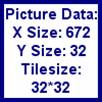
Now it
would be useful to have a point and click interface to an editor, so that's
exactly how it can be done. Try adding in this code:
gTool = New Window(672, 32, 64, 16, 0, 32, "Tiles",
gWindow, Window.TOOL);
gTool.LoadImage("JDTile");
It goes
before the main loop starts up. It should bring up a window with the tiles in
it inside the game window. Annoyingly it's just slightly too big to fit it all
in but that's not really a problem. If it annoys you at all, you can make your
own solution, but because this is only an editor, I've decided to just live
with it.
If you
play with that setup, you'll probably realize that the most obvious way to code
this is like a painting program; selecting the tile to use by clicking the
window with the left or right buttons, and then painting it straight on to the
board.
The first
thing that is necessary to record is what values are in the left mouse button
and the right mouse button. More code which goes before the main loop:
LMB = 0;
RMB = 0;
Then add
this code in the main loop to determine what happens when you press the left
button.
If(IsKeyDown(Keyboard.LBUTTON))
{
If(gTool.GetXMouse()
> 0 && gTool.GetXMouse() < 672 && gTool.GetYMouse() >
0 && gTool.GetYMouse() < 32)
LMB =
gTool.GetXMouse() / 32;
Else
Level.Set(Level.xPos
+ (gWindow.GetXMouse()/32), Level.yPos + (gWindow.GetYMouse()/32), LMB);
}
There's
some very similar code for the right button, but that's another one that you'll
have to work at yourself. If you get that then put that in afterwards too. Also
put a call to:
Level.Draw();
Just
before the refresh call so we can se any changes which were made. If you set
the level to generate random air and earth, you might want to go back and
change it to just earth so that level designing is easier.
Give it a
run and you'll be surprised how functional it is. There's a slight bug to do
with dragging the tiles box around, but that's another one you can solve if you
want. If you play around carefully, you'll see that the walls can only be
titanium blocks or exits, as specified earlier. This forwards planning means
that this has already been taken in to account.
Designing
levels is now possible, but setting the time limit and diamond limit is not.
Enter this function:
Function QuickInput(question, caption, answer)
{
answer = "" +
answer;
gMsg = New
Window(gWindow, 228, 44, caption, Window.DIALOG, Window.TOOL);
gMsgTxt = New
StaticText(gMsg, question, 4, 4, 220, 16);
gMsgTxt.SetBackColor(0xD4D0C8);
gMsgAns = New Edit(gMsg,
answer, 4, 24, 220, 16);
While(!Keyboard.IsKeyDown(Keyboard.Return)
&& IsObject(gMsg));
If(IsObject(gMsg))
{
answer =
gMsgAns.GetText();
Delete gMsg;
}
Return answer;
}
How it
works is not really important, all it does is take a question and a caption,
and a default answer and return back another answer. What it does is bring up a
small box which asks the question and waits for an answer, or to be closed.
Classically the time in Boulderdash was stored in 10ths of seconds. Let's
implement some values.
Make two
new global variables, and put them before the LMB and RMB definitions. Let's have:
DiamondLimit = 0;
TimeLimit = 3000;
Now that
is very well and good, but there's no way of changing them yet. Put these two
code slices in the main loop:
If(IsKeyDown(GetAscii("D")))
{
DiamondLimit =
QuickInput("Diamond limit?", "Enter a number",
DiamondLimit);
DiamondLimit =
DiamondLimit.GetInt(); // The above function returns a string
DiamondLimit =
Min(Max(DiamondLimit, 0), 1000);
}
If(IsKeyDown(GetAscii("T")))
{
TimeLimit =
QuickInput("Time limit? (10ths of second)", "Enter a
number", TimeLimit);
TimeLimit =
TimeLimit.GetInt(); // The above function returns a string
TimeLimit =
Min(Max(TimeLimit, 150), 3000);
}
Now
pressing D will allow you to change the diamond limit and pressing T will allow
you to change the time limit. Notice that the code has the familiar limiting
code so that diamond limit is always between 0 and 1000, and time limit is
always between 150 and 3000.
Saving
and loading levels is still not possible. This can be solved with some new
functions detailed in the next section.
Saving and loading
Saving a
level to disk is simply a matter of finding and recording all the vital
information in a specific order, and loading it is just the same function back
to front so it reloads all the vital information, and sets it up again. You will
probably want to get familiar with the binary object if you're not already, it
features heavily in saving and loading.
Almost
all the vital information is held in the array Level.Block[]. Each number in the array is a
value between 0 and 21 inclusive, so a byte is enough for each. If you don't
know, a byte has 256 different values so a byte is more than enough. If you
were being very efficient, you could use only 5 bits per block but that's
beyond the scope of this example.
The only
other vital information is the diamond limit and the time limit. A reasonable
maximum diamond limit is 1000. As already seen, the time limit is between 150
and 3000. Neither of these values will fit in to a byte, but they will fit in
to two bytes which is called a Word. A Word has 65536 different values.
Now the
size of the save file needs to be calculated. As you probably know by now,
there are 7500 squares, at a byte each, that totals 7500 bytes. Then there are
two variables which take up 2 bytes each, which is another 4 bytes. Therefore
the total is 7504 bytes. Fortunately all the levels will be this size, as there
is no capacity for it changing.
The
function is starting to take form:
Function OBJ_JDLevel_Save(fName)
{
bOut = New Binary();
bOut.AllocateData(7504);
Then
there must be a couple of for loops to go over every position in the block
array and save it in to the binary object. Another variable to record the
writing position is also necessary, let's call it wPos:
wPos = 0;
For(x = 0; x < 100;
x++)
For(y = 0; y <
75; y++)
bOut.SetByte((wPos++),
Block[x, y]);
Then save
the other variables at the end, and save it to disk:
bOut.SetWord(7500,
DiamondLimit);
bOut.SetWord(7502,
TimeLimit);
bOut.SaveData(fName,
TRUE, 0, 0, 7504);
Remember
to delete the binary object (it won't affect the file on the disk) and it's
finished:
Delete bOut;
}
Now if
you can separate out the code from there, you should make it a new function of
the level object. Once that is done, make it part of the program by entering this
code in to the main loop:
If(IsKeyDown(GetAscii("S")))
{
fSelect = New
Selector();
success =
fSelect.SaveFileDialog(gWindow, "Select save file...", "JamaDash
Level|*.JDL||", 0, "Level.JDL", GetApplicationDirectory(),
".JDL");
If(success)
Level.Save(fSelect.GetOneFile());
Delete fSelect;
}
Pressing
S will now save the level. The loading function is much the same. It looks
something like this:
Function OBJ_JDLevel_EditorLoad(fName)
{
bIn = New Binary();
bIn.LoadData(fName, 0,
7504);
rPos = 0;
For(x = 0; x < 100;
x++)
For(y = 0; y <
75; y++)
Block[x, y]
= bIn.GetByte(rPos++);
DiamondLimit =
bIn.GetWord(7500);
TimeLimit =
bIn.GetWord(7502);
Delete bIn;
}
And code
similar to before can be made to put it in to the actual editor. As a last
addition, you might want to include erasing the level when Ctrl+N is pressed.
That's
the editor made so you can start making levels. However, to really test some
example test levels are needed.
The tests
To make
the actual game, some test levels have to be made. In this section, some rough
plans are drawn out using scaled parts of the levels I actually used to build
this tutorial. They don't have to be exact plans, they are just a rough guide
as to what the content of the level should be.
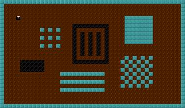
The first
test, simply a player in the top right, and a large empty level with titanium
blocks, air and earth. Make something with these features and call it 'Level0',
and save it in the Debug folder of your project.
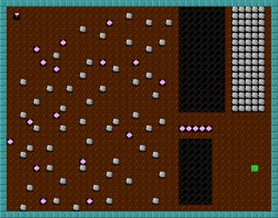
This one
is 'Level1', and it features rocks and diamonds arranged in different ways, and
for the first time an exit as well.
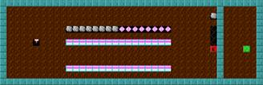
Something
like this can be the basis of 'Level2'. It has metamorphosis blocks, with both
rocks and diamonds above them but with earth blocking their fall. This level
also has the first appearance of the TNT block with a rock poised above it
ready to drop. In my one, I have set it up so that the TNT block will destroy a
wall allowing the player to exit the level.

'Level3'
introduces the baddies. Put some fireflies in different situations, and include
an amoeba with some space around it. As a point which will be raised later on,
make the player start in or near the bottom left hand corner of the map in this
level.
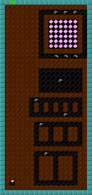
In
'Level4', some rats are put in different situations to test them out. It is
important that some way of killing them exists. In this example I have used
diamonds, because they are as deadly as rocks when falling.
'Level5'
is pretty much a fully designed level. It should include everything which is in
the all the previous levels in one, so that some more 'down to earth' testing
can be done.
Rearranging code
Now that
an editor has been made, most of the level functions are in order. This is
helpful because they can be easily reused in the game. Now that the main game
is being made, the editor isn't needed as much, but it will still be useful so
deleting it is out of the question. The best thing to do is rename the 'Main'
source file 'Editor' and make a new source file called 'Main' and put it at the
top. Jamagic only runs the top source file so swapping around the 'Editor'
source and the 'Main' source can change the game between play mode and editor
mode.
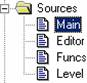
Of course
some code is necessary in the new 'Main' file. Copying straight from the
'Editor' file, try this code:
gWindow = New Window(640, 480, 64, 64, 0, 32,
"JamaDASH!", Window.GAME);
gSurface = gWindow.GetSurface();
gSurface.SetAutoRefresh(OFF);
DiamondLimit = 0;
TimeLimit = 3000;
Level = New JDLevel();
While(TRUE)
{
gSurface.Refresh();
}
Some
other new source files might be in order too. A 'Player' source file for the
player, a 'Baddie' source file, and a 'Mineral' source file to handle the rocks
and diamonds. Splitting each object in to different files is useful, even if
there is very little code in each file. It helps to arrange code a great deal.
Defining the new constructors
Now we
have 3 new source files which are empty, so let's just put the basic
constructors in them for just now. If you refer back to the original picture
you'll see some variables that should be in the objects.
Here is
the source code:
Function JDPlayer()
{
This.Lives = 5;
This.Diamonds = 0;
This.xPos = 1; // x and
y position
This.yPos = 1; // (1, 1)
because (0, 0) is a wall
}
Function JDBaddie(x, y, type, dir)
{
This.xPos = x;
This.yPos = y;
This.type = type; // 0 =
firefly, 1 = rat and 2 = amoeba
This.dir = dir; //
direction
}
Function JDMineral(dia, x, y)
{
This.IsDiamond = dia; //
True or false
This.xPos = x;
This.yPos = y;
}
This is
just basic stuff, but we can make it part of the program as a whole as
specified by the original object design picture.
Level = New JDLevel();
Player = New JDPlayer();
Baddie[0] = 0;
BaddieNum = 0;
Mineral[0] = 0;
MineralNum = 0;
This
code, when placed in the main file will initialize the Level and Player objects, and will initialize the arrays
for the baddies and minerals, but not the actual objects because it is unknown
how many there will be and what properties they will have. Jamagic is slightly
strange with arrays, you can initialize the first variable to be 0 and then
overwrite it with any type of object later on. You can even have different
types of objects in different elements of an array but that's slightly naughty
programming. Here there is an integer variable with each array to keep a record
of how many entries it has.
Loading the level properly
The
editor saves the levels with the baddies, the player and the rocks and diamonds
occupying squares using the numbers above 5 to denote this. However, these
things shouldn't really be built in to the map, but because they can only start
on squares of air it doesn't matter. It does mean that when the level is
loaded, these tiles have to be changed to air, and the player/monster/mineral
in that square has to be initialized in one of the other objects (Player, Baddie[] or Mineral[]).
Let's
review the current loading function:
Function OBJ_JDLevel_EditorLoad(fName)
{
bIn = New Binary();
bIn.LoadData(fName, 0,
7504);
rPos = 0;
For(x = 0; x < 100;
x++)
For(y = 0; y <
75; y++)
Block[x, y]
= bIn.GetByte(rPos++);
DiamondLimit =
bIn.GetWord(7500);
TimeLimit =
bIn.GetWord(7502);
Delete bIn;
}
After it
has finished loading the data, it needs to parse the array and change all
numbers above 5 in to other objects and replace them with 0 (air). It doesn't
need to parse the edges because they can't be anything except wall or exit.
Using the constructors this can be done. It can be done with lots of If statements but here I have used a Switch/Case statement for neatness. Also here
is the first use of the direction system where 0 = up, 1 = right, 2 = down and
3 = right. Imagine how a clock hand turns around the clock, it starts at the
top and then travels around clockwise. Also the system of 0 = firefly, 1 = rat
and 2 = amoeba is used. Systems like this have to be used to differentiate
between different but similar data.
Make a
new function call OBJ_JDLevel_Load by copying the function OBJ_JDLevel_EditorLoad and changing the title. Stick the
following code segment in before the line Delete bIn;. Make sure you remember to add a line to the
constructor of JDLevel to
make the function a property of it.
For(x = 1; x < 99;
x++)
For(y = 1; y <
74; y++)
{
Switch(Block[x,
y])
{
Case(6):
Mineral[(MineralNum++)]
= New JDMineral(FALSE, x, y); // Boulder
Break;
Case(7):
Mineral[(MineralNum++)]
= New JDMineral(TRUE, x, y); // Diamond
Break;
Case(8):
Player.xPos
= x;
Player.yPos
= y;
// Set
direction to up (0)
Break;
Case(9):
Player.xPos
= x;
Player.yPos
= y;
// Set
direction to right (1)
Break;
Case(10):
Player.xPos
= x;
Player.yPos
= y;
// Set
direction to down (2)
Break;
Case(11):
Player.xPos
= x;
Player.yPos
= y;
// Set
direction to left (3)
Break;
Case(12):
Baddie[(BaddieNum++)]
= New JDBaddie(x, y, 0, 0); // Firefly
Break;
Case(13):
Baddie[(BaddieNum++)]
= New JDBaddie(x, y, 0, 1);
Break;
Case(14):
Baddie[(BaddieNum++)]
= New JDBaddie(x, y, 0, 2);
Break;
Case(15):
Baddie[(BaddieNum++)]
= New JDBaddie(x, y, 0, 3);
Break;
Case(16):
Baddie[(BaddieNum++)]
= New JDBaddie(x, y, 1, 0); // Rat
Break;
Case(17):
Baddie[(BaddieNum++)]
= New JDBaddie(x, y, 1, 1);
Break;
Case(18):
Baddie[(BaddieNum++)]
= New JDBaddie(x, y, 1, 2);
Break;
Case(19):
Baddie[(BaddieNum++)]
= New JDBaddie(x, y, 1, 3);
Break;
Case(20):
Baddie[(BaddieNum++)]
= New JDBaddie(x, y, 2, 0); // Amoeba has no direction
Break;
}
If (Block[x,
y] >= 6)
Block[x,
y] = 0;
}
A huge
chunk of code! This shows off how much a Switch/Case can improve code. At a glance you can tell roughly
what it's doing. If it were done with If statements, it would take a lot longer to work out roughly
what it was doing.
As you
may notice there are some bits missing from the player constructor, mainly directions.
That's because the direction of the player isn't really relevant in
Boulderdash, you press left to go left, right to go right, etc. so your last
direction is merely a visual thing. That code can be fixed later on once there
is some more code for the player to work with.
First
though we need to be able to test everything, and that means assigning a test
level. If you remembered to make the levels like earlier then you should have a
file, 'Level0.JDL' in the Debug directory of your project. If you didn't make
up levels like that, then go back to the Editor by changing the top source file
back to Editor and then making the level. If you did make the level, then you
should have a bleak test level with air and walls, and a player. Let's put the
test level in:
Level.Load("Level0.JDL");
Level.Draw();
This'll
put the level on the screen. If this code is run, and everything has been put
together in the right way, it should run and give a good result.
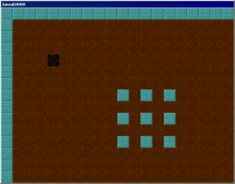
The block
of air is where the player starts which shows that the parsing code has put air
there correctly.
Coding the player
The
player needs a sprite. If you've never used the sprite object before, now is
the time to start learning. Check out the functions of the sprite object in the
Jamagic Help file now.
The
player needs different graphics depending on what direction they are facing.
Although these are already made up in the 'JDTile' graphic, it would be helpful
to have them all as individual images. Also, here is your chance to improve on
the graphics you had before incase you weren't entirely happy with them. As
some example designs, here is what you should add to the picture resources:
Player0:
Player1: 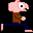
Player2:
Player3: 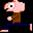
Save
images like those with the filenames specified, then import them in to Jamagic
the usual way. Remember that pure black turns transparent, so if you want
nontransparent black use 0 red, 0 green and 1 blue which is black enough that
no one will notice. The filenames follow the convention from earlier that 0 =
up, 1 = right, 2 = down and 3 = left which also be useful.
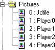
Now the
player needs to have a sprite. Naturally it should be a property of the Player object, so let's change the code of
that.
This.S = New Sprite(gWindow,
0, 0, "Player0");
Putting
that in the constructor of the Player object will make a sprite which is a sub-object of the Player object. Ideally, only the Player object would control this sprite,
using information given to it through its functions. This is better because if
you have to change some vital information about the Player object, it shouldn't interfere with
other parts of the program giving instructions to do with the sprite. If they
just took the sprite by accessing Player.S then it can end up quite difficult to understand
what is happening. Think of this as 'polite' programming. So now we need to
define some functions to change the sprite and to keep it representing the
player's position.
Function OBJ_JDPlayer_SetPos(x, y)
{
This.xPos = x;
This.yPos = y;
This.S.Set(32*(x -
Level.xPos), 32*(y - Level.yPos));
}
Fairly
simple. The last line uses 32*(x - Level.xPos). The 32 multiplier is there because the whole game works in
graphical blocks of 32 pixels, so all game coordinates have to be multiplied up
by 32 to become graphical coordinates. The x - Level.xPos is calculated by thinking about the
scrolling. Take a look at this diagram:
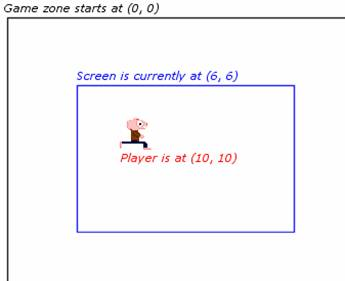
In that
example the player is at (10, 10), but screen has the top left tile (6, 6).
Therefore when the player is displayed on the screen, it should only be four
squares along (6 + 4 = 10) instead of 10 squares (which would put it at the
16th square, which is the wrong place).
Another
function:
Function OBJ_JDPlayer_SetDir(d)
{
This.S.Set(32*(xPos -
Level.xPos), 32*(yPos - Level.yPos), "Player" + d);
}
This
simply takes a value of 0, 1, 2 or 3, and then loads the correct image. When a
number is added to a string, the result will be a string. It was pretty useful
that the player image files were named with the numbers corresponding to their
direction.
Now some
previous code can be changed. Remember this code from the OBJ_JDLevel_Load function?
Case(8):
Player.xPos
= x;
Player.yPos
= y;
// Set
direction to up (0)
Break;
Well, now
it can be changed to this:
Case(8):
Player.SetPos(x,
y);
Player.SetDir(0);
Break;
And the
other code after it can be changed in a similar way, but that's a challenge for
you to do. If the player is placed relative to the screen, then if the screen
is scrolled, the player will need to be updated. This shows the necessity of an
update function. Let's have a look:
Function OBJ_JDPlayer_SpriteUpdate()
{
This.S.Set(32*(xPos -
Level.xPos), 32*(yPos - Level.yPos));
}
Very
simple. Make it part of the Player object by adding it as a property to the constructor.
A special function
If the
player is to move around the map, the program needs to know if there is a wall
or not in the player's target square which is being moved in to. But if there
is an amoeba or a rat, or a firefly, it can also occupy an air square.
Therefore the necessity for a function which finds out once and for all what is
exactly in any given square is required. This function will check the Level, the Mineral, the Baddie and the Player objects, so it's best left out of
all of them and put in to .
For historical reasons, I will call this function PointContent.
Function PointContent(x, y)
{
If(Level.Block[x, y]
> 0) // Not air so can't be anything else
Return
Level.Block[x, y]; // so return that value, 0 to 5 of what it is
For(n = 0; n <
MineralNum; n++)
If(Mineral[n].xPos
== x && Mineral[n].yPos == y)
Return
Mineral[n].IsDiamond + 6; // Returns 6 for rock, 7 for a diamond
If(Player.xPos == x
&& Player.yPos == y)
Return 8; // 8
means player here
For(n = 0; n <
BaddieNum; n++)
If(Baddie[n].xPos
== x && Baddie[n].yPos == y)
Return
Baddie[n].type + 9; // 9 for fly, 10 for rat, 11 for amoeba
Return 0; // It was air
after all
}
Hopefully
that function makes some sense. If you ever copied the comment about the
numbering to ,
now would be a good time to amend it. Here it is again in full:
// 0 = Air
// 1 = Earth
// 2 = Titanium
// 3 = TNT
// 4 = Metamorphosis
// 5 = Exit
// 6 = Rock
// 7 = Diamond
// 8 = Player
// 9 = Firefly
// 10 = Rat
// 11 = Amoeba
Using
comments like this is very useful, because Jamagic doesn't support constants.
Making movement
To move
the player, a function needs to take find out where the player is trying to
move to (using delta-x and delta-y values), find out using the PointContent function if it possible to move the
player there, and if so then do it. Here is such a function:
Function OBJ_JDPlayer_Move(dx, dy)
{
targ = PointContent(xPos
+ dx, yPos + dy);
If(targ == 0 || targ ==
1) // Air or earth
{
xPos += dx;
yPos += dy;
SpriteUpdate();
If (targ == 1)
Level.Set(xPos,
yPos, 0); // Air is dug in to earth
}
}
Make that
code a property of the JDPlayer
object. As you might be able to guess, it also changes the earth in to air if
applicable.
If you think about it, there are some key features missing from this function.
They can be augmented to it later on, but see if you can guess what they are.
Once you have thought about that, let's put some code in the main loop file to
set up the game for playing. It should look like this:
gTic = System.GetElapsedTime() + 50;
While(TRUE)
{
If(gTic <
System.GetElapsedTime())
{
gTic =
System.GetElapsedTime() + 50;
HandlePlayer();
}
gSurface.Refresh();
}
Function HandlePlayer()
{
If(Keyboard.IsKeyDown(Keyboard.RIGHT))
{
Player.Move(1, 0);
Player.SetDir(1);
}
Else
If(Keyboard.IsKeyDown(Keyboard.LEFT))
{
Player.Move(-1,
0);
Player.SetDir(3);
}
Else
If(Keyboard.IsKeyDown(Keyboard.DOWN))
{
Player.Move(0, 1);
Player.SetDir(2);
}
Else
If(Keyboard.IsKeyDown(Keyboard.UP))
{
Player.Move(0,
-1);
Player.SetDir(0);
}
}
The new
function is called HandlePlayer, and it just checks the keyboard configuration,
and then moves the player accordingly. The main loop has been updated in two
ways. First of all, it calls the new HandlePlayer function. Secondly, it uses
System.GetElapsedTime() to limit the framerate and time the game. This helps
because once it is set the game will run at a reasonable pace all the time on
all machines which run it. Without it, it can run too fast on some machines.
Now try it out. The things which are missing are the screen scrolling and the
tiles updating after the player walks on them. If you look back at the code
however, the first problem can be fixed by improving the Level.Set function so that it draws any tile
which has been changed. This could also speed up the editor if it was changed
to take advantage of it, but it's not really necessary.
Let's see
how we can improve the Set command
of JDLevel. This is almost a copy and paste
fix from JDLevel.DrawPos if you look carefully. The line to be placed at the end of the Set command is:
gSurface.Copy(BlockImg,
32*(x - xPos), 32*(y - yPos), 32*t, 0, 32, 32);
This will
try and redraw the tile that is being set. The mathematics involved have
already been explained earlier. If you run the game again, you'll probably
notice that the earth becomes air when the player walks over it. Very useful.
One problem down, one to go. The normal way of scrolling the screen in old
school 2d games is to start it scrolling when the player gets about half way to
the edge, so that if they are doing something of their own agenda in the middle
of the screen, it won't scroll around so they can concentrate better. Placing
this code inside the If
statement of the Move
function of the JDPlayer
object will make the screen scroll if necessary:
If (xPos -
Level.xPos <= 6) // near left edge
Level.DoScroll(-1,
0);
If (xPos -
Level.xPos >= 13) // near right edge
Level.DoScroll(1,
0);
If (yPos -
Level.yPos <= 4) // near top
Level.DoScroll(0,
-1);
If (yPos -
Level.yPos >= 10) // near bottom
Level.DoScroll(0,
1);
Now give
the level a play!
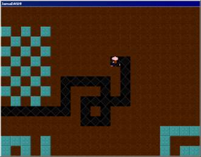
Wow! What
fun. Have a roam around and hopefully everything should be in order. You won't
be able to go through the blocks, you should dig air everywhere and the screen
will follow you around.
Improving the scrolling
After so
much hard work, I'm not going to let you off that easily! Now it's time for a
fairly hard section...
The
scrolling may seem perfect but in if you think about it, it wasn't written to
run very fast. Whenever the screen moves, it redraws everything in it. If
you've got everything so far to work, then you will have been able to drive the
little player graphic around the level, and will see that practically all the
time the level doesn't need to be redrawn, only a very slim set of tiles need
to be redrawn.
This
section isn't for speed reasons. On my computer (850 MHz Duron w/ ATI Radeon)
the screen scrolls easily fast enough. Rather, you should realize in this
section that the simplest algorithm is rarely the best one. Just because
an algorithm has more source code doesn't mean it's necessarily slower.
Sometimes you have to write a lot extra to make it run faster.
Let's
take a look at the function for scrolling inside :
Function OBJ_JDLevel_DoScroll(dX, dY)
{
xPos += dX;
yPos += dY;
xPos = Min(Max(xPos, 0),
80);
yPos = Min(Max(yPos, 0),
60);
Draw();
}
Thankfully
there isn't anything complex left in from earlier. The only line that needs
changed is the Draw();
line at the end. Add a new function to the JDLevel object called DrawPart with this code:
Function OBJ_JDLevel_DrawPart(xa, xb, ya, yb)
{
gSurface.Lock();
For(x = xa; x < xb;
x++)
For(y = ya; y <
yb; y++)
gSurface.Copy(BlockImg,
x*32, y*32, 32*Block[xPos + x, yPos +
y], 0, 32, 32);
gSurface.Unlock();
}
Similar
to DrawPos, but will now only draw between xa and xb, from ya to yb using
the Level object's scroll position variables.
We can use this to fill in only the blocks that need to be drawn. To scroll the
actual screen there is a built in function. Look in the help file under Object
Reference, Windows and Graphics, Surface, Scroll. Take a look if you're not
familiar with it.
The
surface needs to be scrolled corresponding to the values of dX and dY. But if you remember the function, xPos and yPos are capped at 0 and 80 or 60. So although dX and dY are always passed to the function they are not
always applied. For instance, if the player is pushing against the left hand
edge, the screen would be trying to scroll with dX = -1 (left). But the screen won't scroll because it
can't display past the left edge, which is why xPos is capped at 0. If scrolling the surface was introduced, it would need to
know whether or not dX was
really applied or whether the xPos was capped. Using some hard algorithm crunching, the solution can be found.
It looks like this:
Function OBJ_JDLevel_DoScroll(dX, dY)
{
dX += xPos;
dY += yPos;
dX = Min(Max(dX, 0),
80);
dY = Min(Max(dY, 0),
60);
// Now (dX - xPos) is
the applied scroll value, similarly (dY - yPos)
xPos = dX;
yPos = dY;
}
You are
might be wondering how this works unless you're fairly mathematical. Let's take
a look at what the final result in the comment really means:
(dX - xPos)
What has
happened is that dX has been
reassigned the value of xPos after
it has been scrolled. Taking away the original will result in the amount of
scrolling done.
For
example, let's assume that dX was not capped, so that it was added to xPos. In that case, dX is equal to xPos + the original dX passed to the function. So the formula expands to:
((xPos + dX) - xPos) which simplifies to dX
And if it
was capped, then dX would
just be xPos
because no scrolling took place, in which case:
((xPos) - xPos) which is equal to 0, confirming that no scrolling has been done!
Hopefully
that's cleared up any confusion. If it hasn't try running a few test
calculations on paper to work out what is happening. Well, even if you don't
understand, you should see that the important values that were required have been
found. Now to scroll the screen with them using the scroll function. Put this
line after the comment:
gSurface.SCROLL(-32*(dX
- xPos), -32*(dY - yPos));
Auto-caps
messes up this function name but never mind. Now only one thing is left. Using DrawPart to fill in the remaining squares.
This is
actually fairly simple. Just using If statements it can be deduced what scrolling has happened. xPos and yPos need to be set before calling DrawPart so careful attention is needed
there. Thankfully, only left-right scrolling or up-down scrolling can occur at
once which saves a lot of work sorting this out. Here's the code anyway,
the end of the DoScroll
function should look like this:
// Now (dX - xPos) is
the applied scroll value, similarly (dY - yPos)
gSurface.SCROLL(-32*(dX
- xPos), -32*(dY - yPos));
If ((dX - xPos) > 0)
{
xPos = dX;
yPos = dY;
DrawPart(19 - (dX
- xPos), 20, 0, 15);
}
Else If ((dX - xPos)
< 0)
{
xPos = dX;
yPos = dY;
DrawPart(0, 1 -
(dX - xPos), 0, 15);
}
Else If ((dY - yPos)
> 0)
{
xPos = dX;
yPos = dY;
DrawPart(0, 20, 14
- (dY - yPos), 15);
}
Else If ((dY - yPos)
< 0)
{
xPos = dX;
yPos = dY;
DrawPart(0, 20, 0,
1 - (dY - yPos));
}
Else
{
xPos = dX;
yPos = dY;
}
}
A
sizeable chunk of code! It is really just going through the possibilities
though. Running the game should, maybe, make things work. And what's the
result? Oh great, nothing has changed.
Now ask
yourself, did you think it was worth it? You may well say a big 'No' to that.
It seems like a lot of pointless roundabout coding to achieve what's already
been done. Take a little think though. Before it was drawing the full 20 * 15 =
300 tiles every time it scrolled. Now it's either drawing 15 or 20, and on average
that's 17.5 tiles drawn per scroll. Now was it really worth it for a 1714%
speed increase? Yes. It would be more appreciated if the speed was struggling
in the first place though. Maybe if you are unlucky and have quite a slow PC
you will notice the difference.
What
you're supposed to have gained from this section is the knowledge that the
shortest code isn't always the best. Even if this section was gibberish to you,
try and keep that in mind.
Rocks and diamonds!
Now on to
the whole point of this game. Rocks and diamonds! The first test level is
clearly working to a high enough standard that it's time to move on to the
second. The only difference between this level and the previous is is that this
one is full of rocks and diamonds. Let's take a walk around the level. Change
the Level0.JDL in the Main source file to Level1.JDL. Now run the project.
After a
little walk around you've probably noticed there are patches of air that cannot
be walked through. These are indeed the rocks and diamonds, they've just not
been implemented yet. The function PointContent is one step ahead of us by
detecting the spaces that are occupied by rocks or diamonds. Time for some
sprite pictures, which must be drawn and added as a resource to the project
under the respective file names:
Mineral0:
Mineral1:
You
should already know what to do with these.
Now for
some sprite action, let's assign sprites to each of the Mineral objects.
This.S = New
Sprite(gWindow, 32*(xPos - Level.xPos), 32*(yPos - Level.yPos),
"Mineral" + IsDiamond);
That line
goes in the JDMineral
constructor of course.
The
scrolling will become a pain for sure if we have to keep moving all the
boulders and diamonds every time the level scrolls, so there's a little
shortcut we can take with them. When sprites are created in Jamagic they are
given a layer to distinguish them from other sprites. The default layer is 0.
You can scroll these layers using a function which saves a lot of time. I
didn't write it in for the player because it is always moving when the level is
scrolling and it's easier to handle without. But there's a lot of diamonds and
rocks everywhere so it's just as well we can scroll them all at once.
Right
after the previously added line, put this line in.
S.SetLayer(1);
That will
move all the rocks and diamonds in to the first layer. Now they can all be scrolled
by adding this line in to the DoScroll function after the line about scrolling
the surface:
gSurface.ScrollSprites(-32*(dX
- xPos), -32*(dY - yPos), 1);
Run the
game and you'll see all the rocks and diamonds everywhere acting very
stationary but now looking like part of the game.
Making some mineral physics
Now the
rocks and diamonds are there, just they don't do anything. Time to make them
active. There are two basic states which the rocks/diamonds can be in. They are
shown in this diagram:
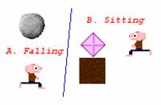
Anyway
the rocks and diamonds are either falling or sitting. If they're falling they
can kill things or land. If they're sitting they can fall off (if they're
sitting on another mineral with no support) or they can... well, just sit there
basically. Nothing too thought intensive. We could determine between these two
states with a boolean flag (a variable which is 0 or 1), but instead let's use
a function pointer to make it easy to run the physics. We need two new
functions:
Function OBJ_JDMineral_Fall()
{
}
Function OBJ_JDMineral_Sit()
{
}
Now add
these functions to the constructor, and also add another function:
This.RunPhysics = This.Sit;
Add that
after the other two functions are set up. This does mean that every will start
sitting but that's okay because they'll start to fall if necessary. The sitting
function is the first one to handle. Let's take a think about the ways in which
the minerals can sit:
• If they
are on top of anything solid they'll sit still.
• If
they're on top of another mineral and they can move left or right, and also
down after that then they will and they'll also start falling.
• If they
are on top of air, they are falling.
To make
that in to a function would look like this:
Function OBJ_JDMineral_Sit()
{
seat =
PointContent(xPos, yPos + 1);
If (seat == 6 || seat ==
7)
{
If
(PointContent(xPos + 1, yPos) == 0 && PointContent(xPos + 1, yPos + 1)
== 0)
{
// Extra
line needed here
xPos++;
yPos++;
S.Set(32*(xPos
- Level.xPos), 32*(yPos - Level.yPos));
RunPhysics =
Fall;
}
Else If
(PointContent(xPos - 1, yPos) == 0 && PointContent(xPos - 1, yPos + 1)
== 0)
{
// Extra
line needed here
xPos--;
yPos++;
S.Set(32*(xPos
- Level.xPos), 32*(yPos - Level.yPos));
RunPhysics =
Fall;
}
}
Else If (seat == 0)
{
// Extra line
needed here
yPos++;
S.Set(32*(xPos -
Level.xPos), 32*(yPos - Level.yPos));
RunPhysics = Fall;
}
}
That
should read pretty well according to the above reasoning. Remember that 6 and 7
are rock/diamond and 0 is air. However, there is a slight problem. This
function is going to cause slowdown. It's calling the PointContent function at least once per mineral
per frame, and the PointContent
function checks every mineral anyway, so that's a lot of checking. How to get
round this is fairly simple. If the mineral is sitting on the ground safely, as
determined at the end of that function, nothing can disturb it until the player
goes near it and starts digging out the earth.
So once
that function is run once, the physics won't change without external influence.
Therefore the RunPhysics
function can be set to a blank function which does nothing. Now if the mineral
is resting on a baddie or the player (but hasn't killed them) then it should
continue sitting there because they will probably be moving pretty swiftly.
Amend the end of the previous function with the following lines:
Else If (!(seat == 8 ||
seat == 9 || seat == 10))
RunPhysics =
Blank;
And also
once it has come to rest upon another mineral and can't fall off it needs to
sit there, so set RunPhysics
to Blank at the end of the first If statement, here's a code snippet to
clarify:
}
Else
RunPhysics =
Blank;
}
Else If (seat == 0)
And at
the top of put this function:
Function Blank() {}
This
should stop any slowdown caused by boulders sitting still.
Boulders
can only fall out once the player moves out of a square, so the checking for
boulders sitting should be done there. In the program, that is the function OBJ_JDPlayer_Move. It needs to be able to find a
mineral at a given coordinate and then set its physics. A function in would be handy here. Something like this:
Function NudgeMineral(x, y, SetFalling)
{
For(n = 0; n < MineralNum;
n++)
If(Mineral[n].xPos
== x && Mineral[n].yPos == y)
Mineral[n].RunPhysics
= Mineral[n].Sit;
}
This
function is nudging the mineral from an 'outside' perspective, in that it
accesses everything through global variables. When a mineral is nudged, it goes
from Blank to Sit in its physics, so it just recalculates what it is
doing. There's a chance that a falling mineral will be nudged, in which case it
will continue falling because it can't sit.
The
following function just nudges the correct way for one point as shown in the
diagram. Remember that this is NudgeMinerals which is plural.
Function NudgeMinerals(x, y)
{
NudgeMineral(x - 1, y -
1);
NudgeMineral(x, y - 1);
NudgeMineral(x + 1, y -
1);
NudgeMineral(x - 1, y);
NudgeMineral(x + 1, y);
}
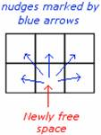
Whenever
a space becomes free, it checks around it for any boulders or diamonds which
might want to move through that square. Update the OBJ_JDPlayer_Move function to take this command - put
it at the start of the If
statement in that function:
NudgeMinerals(xPos, yPos);
Now
logical thinkers will notice that when a mineral falls away it should nudge other
minerals in the same way. You'll have to copy and paste the above code line
three times in to the OBJ_JDMineral_Sit function to get it fully working. The correct three position are in the
comments which say Extra line needed here.
Making more mineral physics
What
happens when a mineral is in the air? It does the following:
• Finds
out what's below it.
• If it's
air then it moves in to it.
• If it's
alive then it kills it (but not the amoeba).
• If it's
solid then it sits on it (including the amoeba).
This
could mean that it comes to rest on another boulder and then falls off it
immediately. That is what should happen. Now to make that in to a function.
Function OBJ_JDMineral_Fall()
{
airspace =
PointContent(xPos, yPos + 1);
If(airspace == 0)
{
NudgeMinerals(xPos, yPos); // Incase any other minerals come to
rest on a falling mineral
yPos++;
S.Set(32*(xPos -
Level.xPos), 32*(yPos - Level.yPos));
}
Else If (airspace == 8
|| airspace == 9 || airspace == 10)
{
// Code for
killing things
}
Else
RunPhysics = Sit;
}
Once that
function is coded in then we need to call the actual physics functions from the
main loop. Add this function to the end of :
Function HandleMinerals()
{
For(n = 0; n <
MineralNum; n++)
Mineral[n].RunPhysics();
}
Easy
enough, it just runs the physics for all minerals. Now put a call to HandleMinerals() after the call to HandlePlayer() in the main loop. Play the game and
mess around with the rocks and diamonds. They should be moving around in
classic Boulderdash fashion, more or less.
There are
still lots of features lacking. Mainly that the player cannot pick up diamonds
or push boulders, and they cannot kill anything. The diamond collecting part of
this can be fixed by modifying the Player.Move function. Take a look at the current function.
Firstly
the player can move in to spaces with targ == 7 (diamond) so add this as another option to the If statement so it looks like this:
If(targ == 0 || targ ==
1 || targ == 7) // Air or earth or diamond
After the
check if the current block is earth, add this code:
If (targ == 7)
CollectDiamond(xPos,
yPos);
Now in ,
add this function which collects a diamond then gets it out of memory. It also
shifts the deleted mineral to the end of the array so that it won't cause
problems in the future:
Function CollectDiamond(x, y)
{
For(n = 0; n <
MineralNum; n++)
If(Mineral[n].xPos
== x && Mineral[n].yPos == y)
{
Mineral[n].Collect();
// Finish off object
Delete
Mineral[n];
If (n !=
MineralNum - 1)
{
Mineral[n]
= Mineral[MineralNum - 1];
Mineral[MineralNum
- 1] = 0;
}
MineralNum--;
Return TRUE;
}
Return FALSE;
}
And
finally add this property to the mineral object:
Function OBJ_JDMineral_Collect()
{
If (!IsDiamond)
Return FALSE;
Delete S; // get rid of
the sprite
xPos = -2; // Set it off
the play area
yPos = -2;
Player.Diamonds++; //
Add a diamond
}
Phew!
Almost like painting in numbers. Now give it a play and it should work.
Pushing boulders
There is
no pushing boulders around yet. This must be fixed. Another change to the
player movement function. Add this to the end of the function:
Else If (targ == 6
&& dy == 0) // Moving horizontally at a boulder, pushing it.
{
If
(PointContent(xPos + 2*dx, yPos) == 0) // Can only push boulders in to air
{
mn =
GetMineral(xPos + dx, yPos);
mn.Move(xPos
+ 2*dx, yPos);
NudgeMinerals(xPos,
yPos);
mn.RunPhysics
= mn.Fall;
// Don't
forget to move the player as well
xPos += dx;
yPos += dy;
SpriteUpdate();
If (xPos -
Level.xPos <= 6) // near left edge
Level.DoScroll(-1,
0);
If (xPos -
Level.xPos >= 13) // near right edge
Level.DoScroll(1,
0);
}
}
You can
only push a boulder if you're moving left or right (hence dy == 0). You are in
position xPos, the
boulder is in position xPos + dx
and that is where you are trying to be, and the boulder is being pushed in to
the space xPos + dx + dx which is simplified to xPos + 2*dx here. The missing functions are GetMineral and the mineral Move function. The first is added to :
Function GetMineral(x, y)
{
For(n = 0; n <
MineralNum; n++)
If(Mineral[n].xPos
== x && Mineral[n].yPos == y)
Return
Mineral[n];
Return FALSE;
}
And this
one is added to the JDMineral
object as a property.
Function OBJ_JDMineral_Move(x, y) // Move to x, y
{
xPos = x;
yPos = y;
S.Set(32*(xPos -
Level.xPos), 32*(yPos - Level.yPos));
RunPhysics = Sit;
}
Great,
all is in place. The boulders can be pushed around and everything is in order.
The death element of the game can be left out until later when there's more
things to kill than just yourself.
Exiting the level
There
should be an exit somewhere in the current test level. If there isn't then go
back to the editor mode and put one in. The game will be impossible if you
can't exit the levels, so it's time to get the exits working. This addition to
the player movement function once again will activate the exits:
Else If (targ == 5)
{
If (Diamonds >=
DiamondLimit)
Complete =
TRUE;
}
Now in put a definition in for Complete, setting it to FALSE. The main while loop has a
statement TRUE, so
change that to !Complete.
Now run the game. Keep a careful count of how many diamonds you pick up. You
should find that the exit works correctly only if you have the correct number
of diamonds.
That's it. Nothing to it.
A new level
Everything
on the Level works. Now you can celebrate, call your friends have a party, and
so on. Don't get carried away though, because there's much left to do. Go to
the Main file and change the level to 'Level2.JDL'. This level introduces some
more of the game elements. The metamorphosis block and the TNT block. The
metamorphosis block works like such:
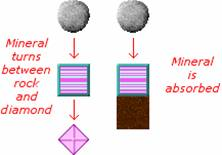
Once
again it's down to changing an existing function. The mineral sit function
needs changed to accommodate this ability. The code is here:
Else If (seat == 4) //
Sitting on a metamorphosis block
{
NudgeMinerals(xPos,
yPos);
If
(PointContent(xPos, yPos + 2) == 0) // There is air underneath it
{
yPos += 2;
IsDiamond =
!IsDiamond;
S.Set(32*(xPos
- Level.xPos), 32*(yPos - Level.yPos), "Mineral" + IsDiamond);
RunPhysics =
Fall;
}
Else // It is
blocks, so absorb
{
Delete S; //
get rid of the sprite
xPos = -2;
// Set it off the play area
yPos = -2;
RunPhysics =
Blank; // Don't let it think any more
}
}
And that
code goes before the last Else statement.
The TNT
blocks are a bit harder. There needs to be an explosion sprite. A large one
this time, the precise size should be 92 by 92 pixels.
Explode: 
Because
the explosions will be used by other things, it's best to create a function for
it. Put this in to the mineral sit function after the code on metamorphosis:
Else If (seat == 3)
CreateExplosion(xPos,
yPos, 0);
All that
needs to be done is to make the CreateExplosion code. The parameters it takes are
coordinates and what to fill them with.
Now a
huge block of code:

Function CreateExplosion(xc, yc, f) // xc = xcentre, yc = ycentre,
f = fill with block type
{
For (x = xc - 1; x <=
xc + 1; x++)
{
For (y = yc - 1; y
<= yc + 1; y++)
{
ClearSquare(x,
y); // Makes the square empty
If (f <=
5)
Level.Set(x,
y, f);
Else If (f
== 6 || f == 7) // The next few lines come out the level loading function
{
Mineral[MineralNum]
= New JDMineral(f - 6, x, y); // Remember false is 0 and true is 1
Mineral[MineralNum].RunPhysics
= Mineral[MineralNum].Fall; // Tip it over
MineralNum++;
}
Else If (f
== 12)
Baddie[(BaddieNum++)]
= New JDBaddie(x, y, 0, Random(4)); // Firefly with random direction
Else If (f
== 16)
Baddie[(BaddieNum++)]
= New JDBaddie(x, y, 1, Random(4)); // Rat
Else If (f
== 20)
Baddie[(BaddieNum++)]
= New JDBaddie(x, y, 2, Random(4)); // Amoeba
NudgeMinerals(x,
y);
}
}
ex = New Sprite(gWindow,
32*(xc - 1 - Level.xPos), 32*(yc - 1 - Level.yPos), "Explode");
ex.SetLayer(2); // Layer
2 is different from all the other sprites so far
ex.SetDrawEffect(Sprite.DEOR);
// This will make it blend well with the background.
}
The explosion
function first clears out a space using the ClearSquare function. Once the space has been cleared, the
explosion function fills the square with the required fill target. After that
is done, it finishes off by placing an explosion sprite in layer two.
The ClearSquare function needs to be implemented
also. A modified PointContent
function with code in it to delete things should work. Here is the code:
Function ClearSquare(x, y)
{
If(Level.Block[x, y]
> 0)
Level.Set(x, y,
0); // Make it 0 type (air)
Else // If it's air,
maybe there's something in the air
{
For(n = 0; n <
MineralNum; n++) // If a mineral is there, delete it
If(Mineral[n].xPos
== x && Mineral[n].yPos == y)
{
Delete
Mineral[n].S;
Delete
Mineral[n];
If (n
!= MineralNum - 1)
{
Mineral[n]
= Mineral[MineralNum - 1];
Mineral[MineralNum
- 1] = 0;
}
MineralNum--;
Return
TRUE; // It was a mineral then
}
If(Player.xPos ==
x && Player.yPos == y) // Maybe the player is there?
{
// Kill the
player
Return TRUE;
}
For(n = 0; n <
BaddieNum; n++) // Perhaps it is a baddie then
If(Baddie[n].xPos
== x && Baddie[n].yPos == y)
{
//
Kill baddie n
Return
TRUE;
}
}
}
Run the
game and you might notice that the sprite for the explosion will stay there
once it has gone off. It needs to be erased at the start of the next frame.
This can be done by checking every frame if there is any need to destroy a
sprite in layer 2, but it can be done better with a boolean value. Add the
variable SpriteClear = FALSE to .
Now when it creates the explosion sprite set SpriteClear to TRUE
inside the CreateExplosion function. A function is needed to clear the sprites:
Function DoSpriteClear()
{
s =
gSurface.GetFirstSprite();
While(s != 0)
{
b = s;
s =
gSurface.GetNextSprite(s);
If(b.GetLayer() ==
2)
Delete b;
}
SpriteClear = FALSE;
}
This will
delete all later two sprites and reset the boolean value. Going back to the
main loop add this code in after gTic is set (inside the If statement):
If(SpriteClear)
DoSpriteClear();
Quite
amusing. Anyway, if it runs all okay then you're sorted.
The baddies and the bugs
Not much
is left to do now. Take a look at the original comment:
// 0 = Air
// 1 = Earth
// 2 = Titanium
// 3 = TNT
// 4 = Metamorphosis
// 5 = Exit
// 6 = Rock
// 7 = Diamond
// 8 = Player
// 9 = Firefly
// 10 = Rat
// 11 = Amoeba
Numbers 0
to 5 are pretty much finished, 6, 7 and 8 are nearly done with a few bits
missing and 9, 10 and 11 are still not done. The baddies are indeed more
troublesome than anything else, but at least the project is over 50% done. The
baddies need sprites, as always, and here are some examples and filenames:
 are Bad00, Bad01, Bad02 and Bad03.
are Bad00, Bad01, Bad02 and Bad03.
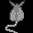
 are Bad20, Bad21, Bad22, and of course Bad23.
This means you'll have to draw some new graphics as well because these amoeba
graphics weren't here before.
are Bad20, Bad21, Bad22, and of course Bad23.
This means you'll have to draw some new graphics as well because these amoeba
graphics weren't here before.
Once
you've made all these graphics and put them as resources inside your project,
add this to the constructor of the Baddie object:
This.S = New
Sprite(gWindow, 32*(xPos - Level.xPos), 32*(yPos - Level.yPos), "Bad"
+ type + dir);
S.SetLayer(1);
Now
change the level to Level3.JDL and give it a run. If you followed the
guidelines for this level, the player should be starting at the bottom left,
which causes a bug to occur! Did you think that this might ever happen? This is
supposed to show that bugs can crop up at any time. The suggested fix is:
// Goes at the start of OBJ_JDLevel_Load
xPos = 0;
yPos = 0;
// Goes at the end of OBJ_JDLevel_Load
xPos =
Min(Max(Player.xPos - 10, 0), 80);
yPos =
Min(Max(Player.yPos - 7, 0), 60);
Player.SpriteUpdate();
Player.Diamonds = 0; //
Reset diamond collected count
gSurface.ScrollSprites(-32*xPos,
-32*yPos, 1);
When that
is added the level will reset itself nicely and start looking at the player. Much
better. After that minor distraction let's take a look around. There should be
some fireflies about, and somewhere along the line an amoeba should be hidden.
If everything's gone to plan to far, their graphics should be there but they
are stationary. They don't have any AI yet, so they are just sitting there.
The first
AI to fill in is the Firefly, it being the simplest enemy. Instead of jumping
straight in to that, first of all let's put in some general commands to make
all the enemies have AI. It looks something like this in the constructor:
This.AI = Blank; //
REMOVED WHEN ALL AI IS IMPLEMENTED
If (type == 0)
This.AI =
OBJ_JDBaddie_FireflyThink;
// Else If (type == 1)
// This.AI =
OBJ_JDBaddie_RatThink;
// Else If (type == 2)
// This.AI = OBJ_JDBaddie_AmoebaThink;
This.thinkTime =
System.GetElapsedTime() + 250 + Random(1000);
The
second two AI statements are commented out because they will be worked on
later. The thinkTime
is the delay before their AI is next called. It is set slightly randomly so
that when the level starts, they don't all think at once causing slowdown at
the beginning. Now it's time to work out the Firefly AI.
Firefly AI
This bad
guy just needs to follow the right hand wall. Simple enough if you look at this
diagram.
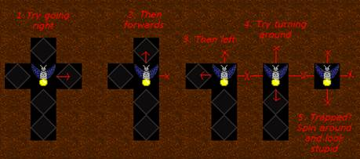
This
gives a good idea of what to make the firefly do. If you think about how the
directions are stored, there has to be a function which converts a direction in
to something that can be used as 'forwards' and 'backwards'. These are dx and
dy values again. You might be thinking of trigonometry right now, but that
can't be used because it is floating point and we are doing integer
calculations. Add these functions to the code:
Function DirToDx(dir)
{
If (dir == 1)
Return 1;
If (dir == 3)
Return -1;
Return 0;
}
Function DirToDy(dir)
{
If (dir == 0)
Return -1;
If (dir == 2)
Return 1;
Return 0;
}
These can
be called to convert a direction in to movement. A useful bit of mathematics
here is modular arithmetic. This is done using the % operator, which returns the
remainder of a number upon division by another.
Let's
take a look at the Firefly AI function. Add it as a property of the JDBaddie object:
Function OBJ_JDBaddie_FireflyThink()
{
For(n = 5; n > 1;
n--)
{
testDir = (dir + n
) % 4;
tPos =
PointContent(xPos + DirToDx(testDir), yPos + DirToDy(testDir));
If(tPos == 0)
{
dir =
testDir;
MoveToSquare(xPos
+ DirToDx(dir), yPos + DirToDy(dir));
thinkTime =
System.GetElapsedTime() + 90 + Random(20);
Return TRUE;
// Purpose found!
}
Else If (tPos ==
8)
{
// Kill
player
}
}
dir = (dir + 1) % 4;
S.Set(32*(xPos -
Level.xPos), 32*(yPos - Level.yPos), "Bad" + type + dir);
thinkTime =
System.GetElapsedTime() + 500 + Random(20);
}
It may
seem complicated but it isn't too complex. The loop goes through the numbers 5,
4, 3, 2. The turning is based on modular four arithmetic. This means that:
5 = 1 (%4)
4 = 0 (%4)
3 = -1 (%4)
2 = 2 or -2 (%4)
Now that
means first it will try the direction plus one (a turn right), then just the
normal direction (straight forward), then the direction minus one (turning
left) and lastly the direction plus two (turned around). Think of a clock which
starts at 3pm (as in right), then winds backwards to 6 hours. The hand will be
in the same position as if it wound forward six hours. Similarly, going back
three hours is the same as going forwards nine hours. If you understand modular
arithmetic then you will be able to see its advantages.
The MoveToSquare function isn't implemented. It
looks like this:
Function OBJ_JDBaddie_MoveToSquare(x, y)
{
xPos = x;
yPos = y;
S.Set(xPos, yPos,
"Bad" + type + dir);
}
That's
just another function based on previous knowledge. Make it a property of the
baddie object. Now the AI needs to be called from the main loop. However, the
way it is handled it can be external of the player loop. Add this function:
Function HandleBaddies()
{
For(n = 0; n <
BaddieNum; n++)
If(Baddie[n].thinkTime
< System.GetElapsedTime())
Baddie[n].AI();
}
And call
it before the screen is refreshed in the main loop. Give the level a run around
and the firefly guys should be flying around. They're not fatal, and they can't
be killed either so there's not much to test other than that they work.
Amoeba AI
The
amoeba has varied in different Boulderdash clones. The version here is going to
grow through air and only collapse once its mass has reached over 12 squares
and it can't expand further. If it can't expand further and it's under 12
squares, it dies and turns in to boulders. If it gets too big, for instance
over 100 squares then it will also die in to boulders straight away to add
another gameplay aspect, and also to stop it getting too complex. The amoebae
must be confined by some obstacles to be useful to the player. Also like
classic Boulderdash, the amoeba will cause the baddies to spontaneously combust
if it grows on top of them, but will strictly leave the player alone.
The
easiest way of keeping account of its mass is to use two variables, Mass and idleMass. The Mass variable increases as the amoeba does. The idleMass variable is the amount of squares
of it which cannot expand further. Clearly if these are kept track of properly,
then when they are both equal the amoeba cannot expand any further. Also, the Mass variable can be used to check if
it's getting too big, or if it's too small to collapse.
The
problem with the amoeba is that it takes multiple squares, so it might as well
be many different amoeba. This is, as you may know, the solution as to how it
could work. If there were a new baddie type, called a AmoebaChild which for all intents and purposes
looks, acts and seems like an amoeba in the game, the problem becomes easy. The
key thing is that the AmoebaChild
won't think like the amoeba. The AmoebaChild could report back to its parent so the original
amoeba square is like a 'control center' that grows drones out. Of course, the
people playing the game won't be able to tell the difference because they'll
appear the same and all act as one unit. The drone AmoebaChilds must know who their parent is as
well, so that has to be recorded when they are 'born'.
This is
all fully possible, but the AI listing is quite long.
First of
all, let's make some simple AmoebaThink code. What it needs to do is check the squares around
itself and try to find one which is completely empty. Let's give it some
variables like turnsLeft
which states how many times it gets to turn around before it can be considered
idle. Also, if the turnsLeft
only goes down if the amoeba is expanding, it will act correctly when it is
trapped in a box at the level start.
Function OBJ_JDBaddie_AmoebaThink()
{
tPos = PointContent(xPos
+ DirToDx(dir), yPos + DirToDy(dir));
If (tPos == 0) // Air
{
Baddie[(BaddieNum++)]
= New JDBaddie(xPos + DirToDx(dir), yPos + DirToDy(dir), 3, Random(4), This);
Mass++;
}
Else If (tPos == 9 ||
tPos == 10)
{
// kill baddie
}
dir = (dir + 1) % 4; //
Rotate clockwise
S.Set(32*(xPos -
Level.xPos), 32*(yPos - Level.yPos), "Bad2" + dir); // Change the pic
a bit to liven it up
If (Mass > 1) // This
checks if it's started expanding
turnsLeft--;
If (turnsLeft == 0)
{
AI =
OBJ_JDBaddie_AmoebaThink_Hibernate;
idleMass++;
}
thinkTime =
System.GetElapsedTime() + 750 + Random(500);
}
Note that
when it can expand it creates a new baddie of type 3. This new type is the AmoebaChild. It's okay to make new numbers for
it because it can only be made whilst the game is being player, so it won't
confuse anything in the level editor. Before the AmoebaChild is implemented,
it's time to tie up the loose end with the amoeba AI.
Function OBJ_JDBaddie_AmoebaThink_Hibernate()
{
If (idleMass == Mass ||
Mass >= 100) // It's dead!
{
AI =
OBJ_JDBaddie_AmoebaThink_Collapse;
collapse = TRUE;
thinkTime =
System.GetElapsedTime() + 4000;
Return TRUE; //
Done
}
dir = (dir + 1) % 4; //
Continue rotating just to look lively
S.Set(32*(xPos -
Level.xPos), 32*(yPos - Level.yPos), "Bad2" + dir);
thinkTime =
System.GetElapsedTime() + 1750 + Random(500); // Not much is happening
}
That
function introduced a new variable of the amoeba, which is collapse. This
should be normally FALSE, but
when the amoeba dies, the parent amoeba sets this to TRUE and all the drones of that amoeba
should notice, and then go in to the death state themselves.
Now that
the parent amoeba is mostly implemented, it's time to work on the AmoebaChild
code. Here is the listing for the first function, and as you may notice it
shares a lot in common with it's parents code, but it does act more like a
drone than a child.
Function OBJ_JDBaddie_AmoebaChildThink()
{
If (parent.collapse ==
TRUE)
{
AI = OBJ_JDBaddie_AmoebaThink_Collapse;
thinkTime =
parent.thinkTime + Random(200); // Don't wait too long
This.Mass =
parent.Mass;
Return TRUE; //
Done
}
tPos = PointContent(xPos
+ DirToDx(dir), yPos + DirToDy(dir)); // Trying to expand, etc.
If (tPos == 0)
{
Baddie[(BaddieNum++)]
= New JDBaddie(xPos + DirToDx(dir), yPos + DirToDy(dir), 3, Random(4), parent);
parent.Mass++;
}
Else If (tPos == 9 ||
tPos == 10)
{
// kill baddie
}
dir = (dir + 1) % 4;
turnsLeft--;
If (turnsLeft == 0)
{
AI =
OBJ_JDBaddie_AmoebaChildThink_Hibernate;
parent.idleMass++;
}
thinkTime =
System.GetElapsedTime() + 750 + Random(500);
}
That's
cleared up, all it needs is a similar hibernation function. Again, this is
almost like the parent amoeba's function, just changed a bit.
Function OBJ_JDBaddie_AmoebaChildThink_Hibernate()
{
If (parent.collapse ==
TRUE)
{
AI =
OBJ_JDBaddie_AmoebaThink_Collapse;
thinkTime =
parent.thinkTime + Random(15000);
This.Mass =
parent.Mass;
Return TRUE;
}
dir = (dir + 1) % 4;
S.Set(32*(xPos -
Level.xPos), 32*(yPos - Level.yPos), "Bad2" + dir);
thinkTime =
System.GetElapsedTime() + 1750 + Random(500);
}
Now
that's done, the last thing to do is to make a function which can collapse the
amoeba and end its reign of terror. It doesn't really need to do anything new,
just spawn some minerals, and move the amoeba square off the map and set it to
never think again.
Function OBJ_JDBaddie_AmoebaThink_Collapse()
{
Delete S;
If (Mass > 12
&& Mass < 100)
Mineral[(MineralNum++)]
= New JDMineral(TRUE, xPos, yPos);
Else
Mineral[(MineralNum++)]
= New JDMineral(FALSE, xPos, yPos);
xPos = -2;
yPos = -2;
AI = Blank;
thinkTime = Pow(10, 10);
// Don't think again so set next think time very far in future (115 years to be
precise)
}
As far as
the AI is concerned, everything is now programmed in correctly. The only
remaining issue is that the amoeba does need to be set up in the right way.
Also, certain precautions have to be taken with the new baddie of type 3. It
has no images, and it should really use the images off baddie 2 (the amoeba).
If you want a laugh, you can set up different graphics, like putting an eyeball
as the amoeba sprite and then tentacles as the child amoeba, but that's your
own quest and the easy solution is included here:
Function JDBaddie(x, y, type, dir, parent) // The amoeba need to
tell its drones who their parent is
{
This.xPos = x;
This.yPos = y;
This.type = type; // 0 =
firefly, 1 = rat and 2 = amoeba
This.dir = dir; //
direction
If (type != 3)
This.S = New
Sprite(gWindow, 32*(xPos - Level.xPos), 32*(yPos - Level.yPos), "Bad"
+ type + dir);
Else
This.S = New
Sprite(gWindow, 32*(xPos - Level.xPos), 32*(yPos - Level.yPos),
"Bad2" + dir);
S.SetLayer(1);
This.AI = Blank; //
REMOVE WHEN ALL AI IS IMPLEMENTED
If (type == 0)
This.AI =
OBJ_JDBaddie_FireflyThink;
// Else If (type == 1)
// This.AI =
OBJ_JDBaddie_RatThink;
Else If (type == 2)
{
This.AI =
OBJ_JDBaddie_AmoebaThink;
This.Mass = 1; //
Set up the extra variables the amoeba needs
This.idleMass = 0;
This.turnsLeft =
4;
This.collapse =
FALSE;
}
Else If (type == 3) //
Amoeba child
{
This.AI =
OBJ_JDBaddie_AmoebaChildThink;
This.turnsLeft =
4;
This.parent =
parent;
}
This.thinkTime =
System.GetElapsedTime() + 250 + Random(1000);
This.MoveToSquare =
OBJ_JDBaddie_MoveToSquare;
}
Try to
read over the Amoeba AI. It's pretty tough but it does demonstrate quite
intricate thought processes. Try playing around with it as well. Whenever it
collapses it kind of crumbles away slowly which is kind of funny as well.
Rat AI
The rat
works differently from the firefly and the amoeba. It is more like the firefly,
however it bases whether it turns a corner on logical decision making. To get a
clear image in my mind of how algorithms work, the best thing I can do is leave
the computer and get a pen and some paper, and sketch it out until it's figured
out. For instance:

Well it
might make me look insane but it did help me think about it. If you can't read
my handwriting then here's what the rat should do:
1. Find
out all the possible directions it can go.
2. All
the directions which are blocked are impossible, of course.
3. Figure
out how useful it will be to travel in each direction, with regards to getting
to the player.
4.
Turning around is a bad direction to travel, even if it is the way to the
player. (This discourages the rat from repeating the same mistake over and
over).
5. Travel
in the direction which is the best.
In
essence, this is just a simple way of guessing the probability of finding the
player in any of the directions that can be travelled. This is called using
'thresholds'. Here is the code:
Function OBJ_JDBaddie_RatThink()
{
bestThreshold = -1; //
All negative thresholds are really bad, so lets set the minimum to -1.
bestDir = -1; // -1 is a
dummy value representing 'no square' at the moment.
For (n = 0; n < 4;
n++)
{
dThreshold = 10;
// Start off with ten points for this direction
space = PointContent(xPos
+ DirToDx(n), yPos + DirToDy(n));
If (space == 8)
{
// Kill
player
}
If (space != 0) //
Not air
dThreshold =
-100; // So give it a really bad score!
If (n % 2 == 0) //
Vertical
If
(Sign(Player.yPos - yPos) == Sign(DirToDy(n)))
dThreshold
+= Min(Abs(Player.yPos - yPos), 10); // Bonus for going towards player
If (n % 2 == 1) //
Horizontal
If
(Sign(Player.xPos - xPos) == Sign(DirToDx(n)))
dThreshold
+= Min(Abs(Player.xPos - xPos), 10);
If (n == dir)
dThreshold
+= 1; // Add a bonus if you're continuing in the same path
If (n == (dir + 2)
% 4) // If it's turning around
dThreshold
/= 2; // Get 50% knocked off
If (dThreshold
> bestThreshold) // Was it the best result so far?
{
bestDir = n;
bestThreshold
= dThreshold;
}
}
If (bestDir != -1) // If
there's a decent square to move in to
{
dir = bestDir;
MoveToSquare(xPos
+ DirToDx(dir), yPos + DirToDy(dir));
}
thinkTime =
System.GetElapsedTime() + 75 + Random(75); // Think again.
}
That
function is an approximation of the AI for the rat. It's fairly clever, it gets
a bit stuck sometimes but with some tweaking it could be made to be very
clever. Thresholds are a simple way of making AI which is reasonably good for
enemies. Indeed, if the threshold formula is complex enough and the amount of
different thought processes and functions are large enough, some seriously good
AI could be in the making. However this is just an enemy in a simple 2d game so
the previous function is good enough. Feel free to; in fact I recommend that
you modify the values and change that previous function until it is of a
suitable difficulty. An AI function like that can only be perfected using a lot
of tweaking. Whenever that is finished, put it in to and finish off the constructor like this:
If (type == 0)
This.AI =
OBJ_JDBaddie_FireflyThink;
Else If (type == 1)
This.AI =
OBJ_JDBaddie_RatThink;
Else If (type == 2)
{
This.AI =
OBJ_JDBaddie_AmoebaThink;
This.Mass = 1;
This.idleMass = 0;
This.turnsLeft =
4;
This.collapse =
FALSE;
}
Else If (type == 3)
{
This.AI =
OBJ_JDBaddie_AmoebaChildThink;
This.turnsLeft =
4;
This.parent =
parent;
}
Also this
minor mathematical function needs to be added:
Function Sign(s) // Returns the sign of the number
{
If (s < 0)
Return -1;
If (s > 0)
Return 1;
Return 0;
}
The
baddies are now complete. Test the rats on Level4, and once that is done try
going to Level5 to finish off something...
Adding death to the game
Currently
in this game, nothing can die.This removes most of the challenge from the game,
and also the fun. The first thing we want to kill is, of course, the Baddies.
Time to go about giving them a kill function.
The CreateExplosion function is what needs to be looked
in to. After all, rocks and diamonds explode when they land on things, and
baddies can be killed by TNT as well. It needs to be updated to destroy baddies
as well as minerals. Fortunately the code is very similar. It is in the ClearSquare function, and the required code is:
For(n = 0; n <
BaddieNum; n++)
If(Baddie[n].xPos
== x && Baddie[n].yPos == y && Baddie[n].type != 2 &&
Baddie[n].type != 3)
{
Delete
Baddie[n].S;
Delete
Baddie[n];
If
(n != BaddieNum - 1)
{
Baddie[n]
= Baddie[BaddieNum - 1];
Baddie[BaddieNum
- 1] = 0;
}
BaddieNum--;
}
This code
needs to go in the Mineral fall function:
If (airspace !=
10)
CreateExplosion(xPos,
yPos + 1, 0);
Else
CreateExplosion(xPos,
yPos + 1, 7);
And this
code needs to go in both the AmoebaThink and the AmoebaChildThink functions:
CreateExplosion(xPos,
yPos + 1, 0);
Return TRUE;
That
should handle it. As you can probably guess the game is really coming together
about now. There are still a few bugs but these aren't worth fixing for the
sake of the tutorial. Now the bad guys are fully killable but this game will
not be any fun until the element of fear is put in to it.
Implementing player death
To record
player death a new boolean variable is required. Add the variable Alive = TRUE; to . Another thing which is
necessary is the restructuring of the main loop to handle level exit/entering.
It looks something like this:
Complete = FALSE;
Alive = TRUE;
Running = TRUE;
SpriteClear = FALSE;
Level = New JDLevel();
Player = New JDPlayer();
Baddie[0] = 0;
BaddieNum = 0;
Mineral[0] = 0;
MineralNum = 0;
While(Running)
{
ClearObjects();
Level.Load("level5.JDL");
Level.Draw();
Complete = FALSE;
Alive = TRUE;
gTic =
System.GetElapsedTime() + 50;
While(!Complete
&& Alive)
{
If(gTic <
System.GetElapsedTime())
{
gTic =
System.GetElapsedTime() + 50;
If(SpriteClear)
DoSpriteClear();
HandlePlayer();
HandleMinerals();
}
HandleBaddies();
gSurface.Refresh();
}
}
Function ClearObjects() // Purges the objects from the global
variables
{
For(n = 0; n <
BaddieNum; n++)
If
(IsObject(Baddie[n]))
Delete
Baddie[n];
For(n = 0; n <
MineralNum; n++)
If
(IsObject(Mineral[n]))
Delete
Mineral[n];
Flush(); // And flushes
them away
BaddieNum = 0;
MineralNum = 0;
}
Now the
level can be exited and it will restart if you die. Now that the capability for
death has been implemented, it's time to make the player die when put in a
fatal situation.
In the ClearSquare function, fix up this line:
If(Player.xPos ==
x && Player.yPos == y)
Alive =
FALSE;
Now all
that needs to be done is the rats and fireflies need to detonate when they
touch you. Use the search function and find every occurrence of "Kill
Player" and replace it with:
CreateExplosion(xPos,
yPos, 0);
Return TRUE;
Making transitions
When you
die or win, the level just restarts. It would be a lot better if it did some
sort of transition to show which happened. This function can do such a thing:
Function EndTransition()
{
If (Complete) //
Finished so do a nice transition
{
For(rot = 0 ; rot
< 40; rot++)
{
gSurface.Rotate(Pi/20,
FALSE);
gSurface.Stretch(gSurface,
20, 20, 512, 384, 0, 0, 640, 480);
gSurface.Refresh();
}
}
Else If (!Alive) //
Died! So do a ominous transition (smudgy zoom)
{
gSurface.SetDrawMode(Surface.BLENDING,
64);
For(fade = 0; fade
< 100; fade += 2)
{
gSurface.Stretch(gSurface,
0, 0, 640, 480, 16, 16, 608, 448);
gSurface.Refresh();
}
gSurface.SetDrawMode(Surface.COPYALL);
If (Player.Lives
< 0)
{
For(fade =
255; fade >= 0; fade--)
{
gSurface.SetBackgroundColor(GetRGB(fade,
fade, fade));
gSurface.EraseRect();
gSurface.Refresh();
}
}
}
}
That
function is just some hand made special effects using the built in graphical
effects.. Put a call to it in the main loop at the end.
Picking
out Level2.JDL as an easy level to complete, and Level4.JDL as an easy level to
die on, it's not too difficult to see what these effects look like.
Making the game in to a game
Okay, as
you can probably see, almost all of the game has been made. But it's still not
a game, because you have to change the source code to load up the level you
want to play. This can be modified to take a list of levels as an array and
load them sequentially every time you complete the previous one, hence making a
really super fun game.
So at the
start of ,
we need to initialize an array of level names, and set a counter to which level
in the array in currently being played. If the player runs out of lives, it goes back to the start of the game. The
last level can be a null string (as in "") and if it is reached, a winning
screen shown.
Now some
missions needs to be made, and I know that not everyone can think up puzzling
situations so I've included a few templates to start the thought processes
going.
1. Four
diamonds can be picked up in these puzzles.
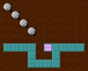 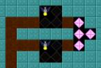 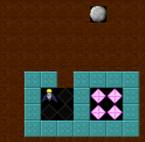 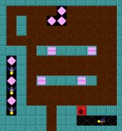
2. In
these puzzles, ten diamonds can be picked up
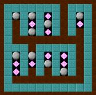 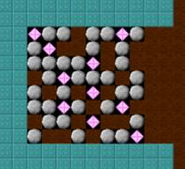 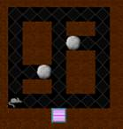 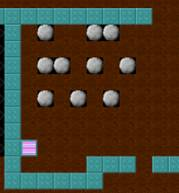
3. These
puzzles are just 'hard to survive' situations
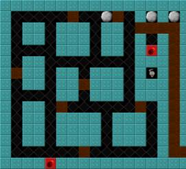 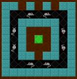 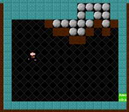
The
missions should be called 'Mission1', 'Mission2', etc. up to number 8. You can
build more if you're enthusiastic but from now on, it is assumed that there are
eight levels. Import them in to Jamagic, in to the Binary Bank. This will allow
the game to access them, but when the game is finally made they will be
contained inside the final EXE file so nobody else will. Once that has been done, time to implement
level changes in to the gameplay. Initialization of the array is simple enough,
but can be simplified with a For loop.
LevelName[8] = "";
For(lev = 0; lev < 8; lev++)
LevelName[lev] =
"Mission" + (lev + 1);
CurrentLevel = 0;
That can
be placed anywhere before the main loop. The level that is loaded needs to be
changed to LevelName[CurrentLevel]. On exiting the level, by death or finishing some extra
code needs to be placed to cope with lives. Something like this should do:
If (!Alive)
Player.Lives--;
If (Complete)
CurrentLevel++;
EndTransition();
If (Player.Lives < 0)
{
Player.Lives = 5;
CurrentLevel = 0;
}
The game
will now be running on built in levels. Whenever you die, you restart the
level. If you run out of lives, you get put back to the start of the game and
your lives are refreshed.
Adding in an ending screen
How about
this for an ending screen? It has to be 640 by 480 pixels so it's the same size
as the screen in the game.

This can
be added in at the end of the game by adding this code after the main loop:
Function EndScreen()
{
ClearObjects();
gSurface.LoadImage("End");
Delete Player.S;
// Delete HUD; // Change
later
gSurface.Refresh();
Wait(10000);
Restart();
}
And also
adding this condition in to the main loop just before the level is
loaded.
If
(LevelName[CurrentLevel] == "")
EndScreen();
This will
prevent the game from trying to load an unnamed level, and also will implement
the ending screen. The ending screen function is quite evil, so to speak. It
deletes the player sprite, which is kind of a bad idea. However, it finishes
off with a Restart();
command, so everything will be lost. This function is a one-way function,
there's no turning back once it's been run.
Adding in sound effects
The game
doesn't have any sound, which is a bit of a drawback. It's time to start
making, creating, or finding your own sound effects. There is a library of
sounds of the Jamagic CD, and these can also be mixed to create more suitable
sound effects. Another way is to get a microphone and start recording stuff.
Anyway, the idea is this:
Sound01.wav:
A sound to play at the start of the game.
Sound02.wav:
Moving around digging noise.
Sound03.wav:
Explosion noise.
Sound04.wav:
Ringing sound, for when a diamond is picked up.
Sound05.wav:
Screaming noise for when you die.
Sound06.wav:
Level complete sound.
A good
way of loading them up is to use an array. Before the main loop put:
SoundEffect[0] = 0;
For(snd = 0; snd < 6; snd++)
SoundEffect[snd] = New
Sound("Sound0" + (snd + 1));
Now the
sound effects can be played anywhere in the code by accessing their array
element like this:
SoundEffect[0].Play();
It isn't
crucial where they are played so that is another exercise for you. Good luck.
Adding in a Heads Up Display and the time limit
The user
should really be able to see how much time and lives they have. Also, the time
limit should be implemented because it is the only gameplay element which has
not yet been implemented. Add a new graphic called 'HUD' which looks like this:
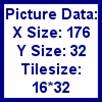
That is
the Digits 0..9, followed by a life counter. The HUD is really just a sprite
which is put in the top left of the screen. It is updated occasionally. There
needs to be a formula for working out the time remaining. This is the formula I
have used:
TimeLimit - ((Current Time - Time
the timer was started) / 100)
When the
timer was started needs to be recorded. A variable would be useful here, such
as TimeStart. Make it a global variable, and set
it to the ElapsedTime
of the System
object both before the main loop and in the level loading function like this:
TimeStart = System.GetElapsedTime();
The code
used for the HUD is:
Function HUDInit()
{
This.HUDDigits = New
Surface("HUD");
This.HUDScreen = New
Surface(80, 96);
HUDScreen.SetBackgroundColor(0);
// Black
HUDUpdate();
This.HUD = New
Sprite(gSurface, 0, 0, HUDScreen);
}
Function HUDUpdate()
{
HUDScreen.EraseRect();
tlSt = "" +
Max(0, TimeLimit - ((System.GetElapsedTime()-TimeStart)/100)); // Get time left
For (d = 0; d <
tlSt.Length(); d++)
{
dig =
tlSt.GetAscii(d);
HUDScreen.Copy(HUDDigits,
16 * d, 0, 16*(dig - 48), 0, 16, 32);
}
dSt = "" +
Max(0, DiamondLimit - Player.Diamonds); // Adding to "" converts to a
string
For (d = 0; d <
dSt.Length(); d++)
{
dig =
dSt.GetAscii(d);
HUDScreen.Copy(HUDDigits,
16 * d, 32, 16*(dig - 48), 0, 16, 32);
}
For (d = 0; d <
Player.Lives; d++)
HUDScreen.Copy(HUDDigits,
16 * d, 64, 160, 0, 16, 32);
}
These two
functions will initialize the HUD and update it. A call to the HUD
initialization code should go before the main loop, and a call to the update
goes in the main loop. The question, though, is where in the main loop? Well,
drawing the HUD is going to take a comparatively short time, and we don't want
it to affect the player's movement by causing slowdown. So it should really be
drawn whenever the game has some free processing time. This is where I put it:
HandlePlayer();
HandleMinerals();
}
Else
HUDUpdate();
// Done on spare time
If (TimeLimit -
((System.GetElapsedTime()-TimeStart)/100) <= 0) // No time left
Alive =
FALSE;
The last
bit of code also kills you if you run out of time therefore implementing the
time limit. Now that there is a HUD, the EndScreen function should be changed
to delete it at the end of the game.
Making support for user levels
If the
user has made levels using the editor, then they should be able to make their
own mission at start up. This is easy enough, just use the selector object.
Thankfully the selector object can be used to return a list of filenames in an
array. The problem is if it's only returning one file, it won't use an array,
but the main loop always loads the level through an array. A function which
uses the selector and then finds an array from it looks like this:
Function GetLevelData()
{
dSelector = New
Selector();
done =
dSelector.OpenFileDialog(gWindow, "Select mission(s)...",
"JamaDASH Levels|*.JDL||", 0, "",
GetApplicationDirectory(), "JDL", Selector.FILEMUSTEXIST,
Selector.ALLOWMULTISELECT);
If (done) // Files were
selected
{
If
(dSelector.HasManyFiles()) // It's an array (easy)
This.LevelName
= dSelector.GetFiles();
Else // Just a
single level that needs to be put in an array
{
This.LevelName[0]
= dSelector.GetOneFile();
This.LevelName[1]
= ""; // No other levels
}
}
Else // Didn't select
any levels, so just use the built in ones
{
This.LevelName[8]
= "";
For(lev = 0; lev
< 8; lev++)
LevelName[lev]
= "Mission" + (lev + 1);
}
Delete dSelector;
}
A call to
this function can replace the code that decides the level names at
startup. This will allow users to select their own mission set.
Finishing it off
A few
code additions:
In the
function HandlePlayer, a self destruct command and quitting option:
Else If
(Keyboard.IsKeyDown(GetAscii("S")) &&
Keyboard.IsKeyDown(Keyboard.CONTROL)) // Ctrl + S = Self destruct
CreateExplosion(Player.xPos,
Player.yPos, 7);
Else If
(Keyboard.IsKeyDown(Keyboard.ESCAPE)) // Escape quits
Running = FALSE;
At the
very end of the main file, some exiting code:
For(snd = 0; snd < 6; snd++)
SoundEffect[snd].Stop();
// Stop all sounds
Display.ShowMouseCursor(); // Show the cursor
gWindow.SetWindowedMode(); // Go back to windows
Before
the main loop but after the call to GetLevelData():
Display.HideMouseCursor(); // Get rid of the mouse pointer so it
doesn't bother people
Go in to
the Project, Settings dialogue box and set the build configuration to Win32
Release. Draw an icon, delete the RunTime Init. code, go to GameInput and then
the Modify button and delete all the settings. Go out of that dialogue and
uncheck the tick boxes, then go to Modules and uncheck 3D Engine. Click OK to
get out of project settings. There, everything is set up.. and you're ready to
roll.
Have fun
with the game, if ever get this far.
A retrospective view
After all
that work, what is the quality of the result?
Well, the
game can suffer slightly from slowdown when there's a lot of minerals flying
around. As always it depends on what computer is being run on. It isn't really
an issue, because the way it was designed was supposed to be relatively simple
to understand. The minerals could have been optimized for speed which would
have prevented the slowdown but been difficult to understand.
There are
a few bugs in the code. You can walk directly in to the path of a flow of
falling boulders. This isn't too hard to fix, and you can if you want. I prefer
to take the lazy route and call it a 'feature' of the game.
The
original plan for the main loop looked like this:
1. Move
player and update info, so that you can get out of the way of anything falling
on you.
2. Make
the rocks and diamonds move incase they fall on a nearby baddie saving the
player.
3. Move
the baddies.
4. Update
the blocks. This is after updating the baddies so that they can't follow the
player on to dirt if the player digs out the way just in time.
5. Change
the time so that as much as possible can occur right up until time runs out.
This
wasn't followed precisely. The baddies where on a separate time control from
the players (I wanted to demonstrate both ways of controlling groups of
objects, I prefer the way the Baddies where timed with thinkTime). The blocks
in the level never really needed updating in the main loop so that was missed
out. Other than that, it was pretty much the same order.
Any
program can be improved. In what way way this program lacking?
Well,
first of all the bugs could always be fixed.
The Rat
AI could be improved. Perhaps some code could be put in to ambush the player,
where if the rat is sufficiently far away, and it finds a dead end tunnel, it
will sit and wait there for the player to near, and then run at them when they
get near. There isn't anything wrong with the Rat's AI as it is, but AI is
never perfect and always has stupid shortcomings that people just have to
figure out.
The
scrolling could be made so it didn't snap to a 32 spaced grid. This would
require all the level drawing commands to be changed to accept screen
coordinates instead of level coordinates and then translating back. The mod % operator would be needed quite a
lot, and generally it's a lot trickier. It is possible though, and will improve
the visual quality of the game quite a lot.
The
boulders could fall smoothly instead of jumping down squares. The baddies could
move smoothly instead of jumping around squares. The player could also move
smoothly, instead of jumping around squares. This sort of thing is harder to
implement, it requires precise timing on the part of the programmer. It would
have to be calculated with percentages, and would probably be easiest to
implement with the baddies, if you really want the challenge.
The level
editor could be integrated and improved a great deal. This would allow people
to make their own levels with ease. And it could be integrated with the actual
game, but that's all a bit over the top because there wasn't even a main menu
to this game.
And of
course, there's the things which can be added for fun. This section is
basically for the enthusiastic reader who wants a challenge.
New
square type:
Teleportation squares. These would scan through the level from left to right,
top to bottom and find the next teleportation square then send whatever hits
them there.
New
mineral type:
Cocoon. It falls down and when it hits the ground, it explodes in to fireflies.
Most of the code for this is already implemented, so to make it more
challenging, they could be pushed around and only break when they fell over
five squares.
New
baddie type: The
butterfly. It follows the left hand wall, explodes in to diamonds and is very
fast.
New
gameplay element:
Oxygen supply. Taking an idea from Manic Miner on the ZX Spectrum, why not make
the player subject to the detriment of having to breathe oxygen. It could be
recharged at oxygen points so the player can't wander around too long without
pegging it. This would make the game 4.7 times more difficult.
EOF